色の付いた枠のコードの、右上の「コピー」ボタンを押してください。コピーしたら、PDF を見ていた画面に戻ります（ブラウザーで PDF を見ていた時は「戻る」、VS Code で見ていた時は VS Code の窓に切り替えます）。
01〜10 の巻で使ってきた機能のうち、毎日のように使う物を 1 か所に集めた「引くための本」です。
manage.py・PostgreSQL の psql・VS Code・Git の、よく打つコマンド。読み方: 頭から全部読む必要はありません。困った時に、下の表から探して、その節だけ読んでください。サンプルは、動かして、少し書きかえて、もう一度動かすと身に付きます。
▶ 準備: 00 の 6 章（VS Code・Node.js・Python）。サンプルのファイルは、全部 samples\ の中の、各巻の練習のフォルダに入っています（ファイルの名前が x01_ のように x で始まる物が、この付録のサンプルです）。
| やりたいこと | 見る所 |
|---|---|
| フォルダを移動する・ファイルを見る・コピーする | A-1 PowerShell |
| TypeScript を動かす・型を確かめる・部品を入れる | A-2 Node.js と npm |
| Python の仮想環境を作る・部品を入れる | A-3 Python と pip |
| Django の表を作る・確かめる・動かす | A-4 Django の manage.py |
| データベースの中を見る | A-5 psql |
| VS Code で速く書く・変更を記録する | A-6 VS Code・A-7 Git |
| よく使う HTML のタグ（見出し・表・フォーム） | B-01 |
| 横に並べる・ます目に並べる・スマホで 1 列にする | B-02 |
| 文字列と数（TypeScript） | B-03 |
| 配列の map・filter・find・reduce・並べかえ | B-04 |
オブジェクト・型・?. と ?? |
B-05 |
| async/await・エラー・JSON | B-06 |
| クラス・Map・Set・日付 | B-07 |
| ボタンで値を変える（useState） | B-08 |
| 一覧と絞り込み（map と key） | B-09 |
| 入力フォームと入力の検査 | B-10 |
| 画面が出たあとにデータを取ってくる（useEffect と fetch） | B-11 |
| 部品に分ける（props・children） | B-12 |
| 文字列と数（Python） | B-13 |
| リスト・辞書・集合・内包表記 | B-14 |
| 関数・クラス・dataclass・Enum | B-15 |
| 例外・ファイル・JSON・CSV | B-16 |
| 日付と時刻・日本時間 | B-17 |
| Django の ORM（絞り込み・集計・まとめて変える） | B-18 |
| エラーが出た・動かない | C 章 |
| やりたいこと | 打つ命令 | メモ |
|---|---|---|
| 今いるフォルダを表示する | Get-Location（pwd） |
|
| フォルダを移動する | cd フォルダ名 |
cd .. で 1 つ上、cd ~ でホーム |
| 中身の一覧を見る | Get-ChildItem（ls） |
-Recurse で中のフォルダまで |
| フォルダを作る | mkdir 名前 |
|
| ファイルの中身を見る | Get-Content 名前 -Encoding utf8 |
-Tail 20 で最後の 20 行、-Wait で増えるのを見続ける（ログを見る時） |
| コピー・移動・名前を変える | Copy-Item・Move-Item・Rename-Item |
|
| 消す | Remove-Item 名前 |
フォルダは -Recurse。ごみ箱に入らない |
| 文字を探す | Select-String -Path *.py -Pattern "文字" |
何行目にあるかも出る |
| 前に打った命令 | ↑ キー |
Tab で名前の続きを自動で入れる |
| 動いている命令（サーバーなど）を止める | Ctrl ＋ C |
|
| 環境変数を決める（この窓だけ） | $env:名前 = "値" |
見る: $env:名前 |
| 直前の命令の終了コード | $LASTEXITCODE |
0 なら成功 |
くわしい使い方と、実際の出力は、Rust の資料の付録（Rust フォルダの 14_付録_…）の A-1 にもあります。
| やりたいこと | 打つ命令（練習のフォルダで） |
|---|---|
| 入っている版を見る | node --version・npm --version |
package.json に書いてある部品を、まとめて入れる |
npm install（package-lock.json のとおりに入れ直すなら npm ci） |
| 部品を足す（動かす時に使う物） | npm install 部品の名前 |
| 部品を足す（作る時だけ使う物） | npm install -D 部品の名前 |
package.json の scripts を動かす |
npm run 名前（例: npm run dev・npm run build・npm run check） |
| TypeScript の型を確かめる | npx tsc（何も出なければ、間違い無し） |
| TypeScript のファイルを動かす | node src\ファイル名.ts（02 の練習のやり方） |
| React の開発用のサーバーを動かす | npm run dev（止める時は Ctrl ＋ C） |
| 入っている部品の一覧 | npm ls --depth=0 |
メモ: PowerShell で npm と打って「このシステムではスクリプトの実行が無効」と出る時は、npm.cmd・npx.cmd と打ちます（00 の 6.3）。
▼ 実行結果（samples\02_typescript で）
node --version → npm --version → npx tsc --version:
v25.9.0
11.12.1
Version 7.0.2
npm run check（package.json の "check": "tsc" が動く。型の間違いが無いので、tsc は何も表示しない）:
> check
> tsc
npm ls --depth=0（samples\03_react で）:
webapp-learning-react@1.0.0 C:\Users\you\Documents\def\webapp_learning\samples\03_react
├── @types/react-dom@19.3.0
├── @types/react@19.3.0
├── @vitejs/plugin-react@6.1.2
├── react-dom@19.3.1
├── react@19.3.1
├── typescript@7.0.2
└── vite@8.3.5
node の版は、入れた時期によって違います。02 では node で .ts のファイルをそのまま動かすので、Node.js 24 以上をすすめます（00 の 6.3）。npm ls の ├── の行が、package.json に書いた部品と、入っている版です。この資料では、仮想環境（.venv）の中の Python を、場所を書いて動かします（04 の 1 章）。
| やりたいこと | 打つ命令（練習のフォルダで） |
|---|---|
| 仮想環境を作る | py -3.14 -m venv .venv |
| 仮想環境の Python の版を見る | .\.venv\Scripts\python.exe --version |
| 部品をまとめて入れる | .\.venv\Scripts\python.exe -m pip install -r requirements.txt |
| 部品を 1 つ入れる | .\.venv\Scripts\python.exe -m pip install 部品の名前 |
| 入っている部品の一覧 | .\.venv\Scripts\python.exe -m pip list |
入っている部品を requirements.txt の形で出す |
.\.venv\Scripts\python.exe -m pip freeze > requirements.txt |
| ファイルを動かす | .\.venv\Scripts\python.exe ファイル名.py |
| 1 行ずつ試す（対話モード） | .\.venv\Scripts\python.exe（終わる時は exit()） |
▼ 実行結果（samples\04_python で）
Python 3.14.4
Package Version
------- -------
pip 26.0.1
tzdata 2026.6
▼ 実行結果（samples\05_django で pip freeze。Django が使う部品 asgiref・sqlparse も自動で入っている）
asgiref==3.13.0
Django==5.2.18
djangorestframework==3.18.3
sqlparse==0.6.0
tzdata==2026.6
manage.py は、Django のプロジェクトの「何でも係」です。.\.venv\Scripts\python.exe manage.py 命令 の形で打ちます（下の表では manage.py 命令 と短く書きます）。
| やりたいこと | 命令 |
|---|---|
| 設定のまちがいを調べる | manage.py check |
| モデルを変えたあと、変更の手順（マイグレーション）を作る | manage.py makemigrations |
| 手順をデータベースに当てる（表を作る・変える） | manage.py migrate |
| どの手順まで当てたか見る | manage.py showmigrations |
| モデルとデータベースがずれていないか確かめる | manage.py makemigrations --check --dry-run |
| 管理者を作る | manage.py createsuperuser |
| 開発用のサーバーを動かす | manage.py runserver（http://127.0.0.1:8000/） |
| Python の対話モードで、モデルを試す | manage.py shell（ファイルを動かすなら shell -c "import ファイル名"） |
| テストを動かす | manage.py test |
| 静的ファイルを 1 か所に集める（サーバーに出す時） | manage.py collectstatic |
| 作れる命令の一覧 | manage.py help |
▼ 実行結果（samples\05_django で）
manage.py check:
System check identified no issues (0 silenced).
manage.py showmigrations requests_app（[X] は「当てた」印。[ ] なら、まだ migrate していない）:
requests_app
[X] 0001_initial
manage.py makemigrations --check --dry-run（モデルを変えたのに makemigrations を忘れていると、ここで手順の名前が出て、終了コードが 1 になる）:
No changes detected
psql の入れ方と SQL の練習は、onprem の 02（SQL と PostgreSQL の使い方）にくわしくあります。ここでは、psql の中で打つ「\ で始まる命令」をまとめます。
| やりたいこと | psql の中で打つ |
|---|---|
| データベースの一覧 | \l |
| 別のデータベースにつなぎ直す | \c データベース名 |
| 表の一覧 | \dt |
| 表の形（列と型） | \d 表の名前 |
| ロール（ユーザー）の一覧 | \du |
| 結果を縦に並べて見る（列が多い時） | \x（もう一度打つと戻る） |
| かかった時間を出す | \timing |
| 命令の一覧 | \? |
| 終わる | \q |
メモ: SQL の文（SELECT ...）は、最後に ; を付けると実行されます。付け忘れると、webapp_dev-> のように、続きを待つ印に変わります。
| やりたいこと | 押すキー |
|---|---|
| 保存 | Ctrl ＋ S |
| ファイルの名前で探して開く | Ctrl ＋ P |
| 何でも命令を探す（コマンドパレット） | Ctrl ＋ Shift ＋ P |
| ターミナル（PowerShell）を出す・しまう | Ctrl ＋ @ |
| 書き方を整える | Shift ＋ Alt ＋ F |
| 行をコメントにする・戻す | Ctrl ＋ / |
| 同じ言葉を一度に選ぶ | Ctrl ＋ D |
| フォルダ全体から探す | Ctrl ＋ Shift ＋ F |
| 定義へ飛ぶ・名前をまとめて変える | F12・F2 |
| 指定した行へ飛ぶ | Ctrl ＋ G（エラーに出た行の番号を入れる） |
| やりたいこと | 打つ命令 |
|---|---|
| 今の状態を見る | git status |
| 変更の中身を見る | git diff |
| 記録に入れるファイルを選ぶ | git add ファイル名（全部: git add .） |
| 記録する | git commit -m "何をしたか" |
| 記録の一覧 | git log --oneline |
| 保存していない変更を捨てる | git restore ファイル名 |
| 記録しないファイルを決める | .gitignore に書く（.venv/・node_modules/・.env・db.sqlite3 など） |
大事: パスワードの入った .env・dev.env は、記録する前に .gitignore に書きます（10 の 12 章）。練習のフォルダの .gitignore が見本です。
実際の出力つきの説明は、Rust の資料の付録の A-5 にあります。
どのサンプルも、何に使う → ▶ 書く所と動かし方 → コード → 結果 → ここがポイントの順に載せています。
何に使う: 画面の「中身」を書く時。どの画面も、ここに出てくるタグの組み合わせでできています。
▶ 書く所と動かし方: samples\01_html_css\x01_tags.html をダブルクリックすると、ブラウザで開けます（サーバーは要りません）。書きかえたら保存して、ブラウザで F5 を押すと、表示が新しくなります。
<!doctype html>
<html lang="ja">
<head>
<meta charset="utf-8">
<meta name="viewport" content="width=device-width, initial-scale=1">
<title>よく使うタグ - 付録</title>
<style>
/* 見やすくするための少しの CSS（タグの働きは B-02 で） */
body { font-family: "Yu Gothic UI", "Meiryo", sans-serif; margin: 16px 24px; color: #1e3a5f; }
table { border-collapse: collapse; }
th, td { border: 1px solid #94a3b8; padding: 4px 10px; }
th { background: #eef2f7; }
label { display: block; margin-top: 8px; }
label.inline { display: inline; }
</style>
</head>
<body>
<!-- 1. 見出し（h1 が一番大きい。1 ページに h1 は 1 つ） -->
<h1>見出し h1</h1>
<h2>見出し h2</h2>
<!-- 2. 段落・強調・改行・リンク -->
<p>これは段落です。<strong>大事な所</strong>と<em>強めたい所</em>。<br>br で改行します。</p>
<p><a href="request_list.html">自分の依頼の一覧へ</a>（同じフォルダの別のページへのリンク）</p>
<!-- 3. 並び: ul は順番の無い並び、ol は番号つきの並び -->
<ul>
<li>治具の製作</li>
<li>部品の追加工</li>
</ul>
<ol>
<li>依頼を入力する</li>
<li>承認者が順に確かめる</li>
</ol>
<!-- 4. 表: thead（見出しの行）と tbody（中身の行）。th は見出しのます、td は中身のます -->
<table>
<thead>
<tr><th>番号</th><th>件名</th><th>状態</th></tr>
</thead>
<tbody>
<tr><td>1</td><td>治具の製作</td><td>回覧中</td></tr>
<tr><td>2</td><td>部品の追加工</td><td>回覧完了</td></tr>
</tbody>
</table>
<!-- 5. フォーム: label の for と、入力欄の id を同じにすると、ラベルを押しても入力欄が選ばれる -->
<form action="#" method="post">
<label for="title">件名（必須）</label>
<input id="title" name="title" type="text" required maxlength="100" placeholder="例: 治具の製作">
<label for="due">希望の納期</label>
<input id="due" name="due_date" type="date" value="2026-11-10">
<label for="qty">個数</label>
<input id="qty" name="qty" type="number" min="1" max="99" value="1">
<label for="kind">種類</label>
<select id="kind" name="kind">
<option value="new">新しく作る</option>
<option value="fix" selected>直す</option>
</select>
<label for="detail">内容</label>
<textarea id="detail" name="detail" rows="2" cols="40">寸法は図面のとおり</textarea>
<p>
<input id="urgent" name="urgent" type="checkbox" checked>
<label for="urgent" class="inline">至急</label>
<input id="mail-yes" name="mail" type="radio" value="yes" checked>
<label for="mail-yes" class="inline">メールで知らせる</label>
<input id="mail-no" name="mail" type="radio" value="no">
<label for="mail-no" class="inline">知らせない</label>
</p>
<button type="submit">送る</button>
</form>
</body>
</html>
▶ ここで初めて出てくるコード
<style>（HTML）: HTML の中に、直接 CSS を書くタグ。ふつうは<head>の中に書きます（大きくなったら、別の CSS のファイルに分けます）。<em>（HTML）: 「強めたい」という意味のタグ。ふつうは斜めの字で表示されます。<br>（HTML）: 改行のタグ。閉じタグはありません。段落を分けたい時は、<br>を並べるより<p>を分けます。<!-- -->（HTML）: HTML では、<!--から-->までがコメントで、画面には出ません。min=（HTML）:<input type="number" min="1" max="99">のminは、入れられる一番小さな数です。max=（HTML）:maxは、入れられる一番大きな数です。selected（HTML）:selectedは、その選び肢（<option>）を、最初から選んだ状態にする印です。cols=（HTML）:<textarea cols="40">のcolsは、見える幅（だいたいの文字数）です。checked（HTML）:checkedは、チェックボックスが最初からチェックされた状態にする印です。値は書かず、名前だけで ON になります。
▼ 画面（Chrome で開いて撮った物）
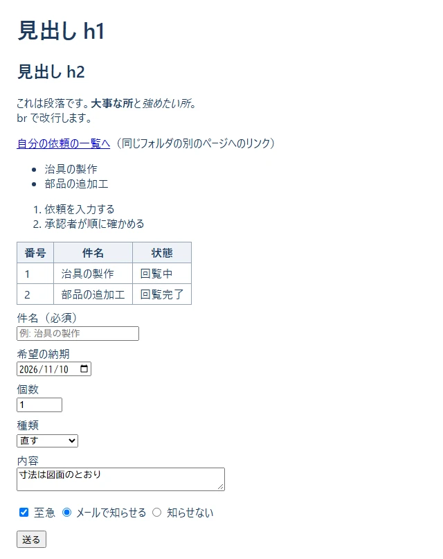
ここがポイント:
| タグ | 意味 | メモ |
|---|---|---|
<h1>〜<h6> |
見出し | 数が小さいほど大きい。h1 は 1 ページに 1 つ |
<p> |
段落 | 文のまとまり |
<a href=".."> |
リンク | href に行き先 |
<strong>・<em> |
強調 | 太字・斜体は CSS で見た目を変えられる |
<ul>・<ol>・<li> |
並び | ul は点、ol は番号。中身は li |
<table>・<tr>・<th>・<td> |
表 | tr が 1 行、th が見出しのます、td が中身のます |
<form> |
入力のまとまり | method="post" で送る |
<label for="id"> |
入力欄の名前 | for と入力欄の id を同じにする |
<input type="..."> |
入力欄 | text・date・number・checkbox・radio・file・password など |
<select>・<option> |
選ぶ欄 | selected で最初に選ばれている物 |
<textarea> |
複数行の入力欄 | |
<button type="submit"> |
送るボタン |
required（必須）・maxlength（最大の文字数）・min・max を付けると、ブラウザが送る前に確かめてくれます。ただし、サーバーでも必ず確かめます（ブラウザの確かめは、わざと飛ばせるので。10 の 7 章）。name が同じ物どうしで「どれか 1 つ」になります。<!-- ... --> はコメントで、画面には出ません。何に使う: 画面の「見た目」と「並べ方」を決める時。
▶ 書く所と動かし方: samples\01_html_css\x02_layout.html と x02_layout.css を、同じフォルダに置いたまま、x02_layout.html をダブルクリックして開きます。ブラウザの窓の幅を狭くすると、並び方が変わります。
<!doctype html>
<html lang="ja">
<head>
<meta charset="utf-8">
<meta name="viewport" content="width=device-width, initial-scale=1">
<title>よく使うレイアウト - 付録</title>
<link rel="stylesheet" href="x02_layout.css">
</head>
<body>
<!-- 1. flex: 横一列に並べる（左右に分ける） -->
<header class="bar">
<strong>依頼・承認アプリ</strong>
<nav class="menu">
<a href="#">自分の依頼</a>
<a href="#">新しい依頼</a>
</nav>
</header>
<main>
<!-- 2. grid: 何列かのます目に並べる（画面が狭いと 1 列になる） -->
<section class="cards">
<div class="card">回覧中 <b>2</b> 件</div>
<div class="card">差し戻し中 <b>1</b> 件</div>
<div class="card">完了 <b>5</b> 件</div>
</section>
<!-- 3. 箱の中の余白（padding）・外の余白（margin）・枠線（border） -->
<div class="box">padding 16px ／ border 4px ／ margin 24px の箱</div>
<!-- 4. 状態で色を変える（class を 2 つ付ける） -->
<p>
<span class="badge">回覧中</span>
<span class="badge badge-warn">差し戻し中</span>
<span class="badge badge-ok">完了</span>
</p>
<!-- 5. ボタン（:hover はマウスを乗せた時の見た目） -->
<button class="btn">承認する</button>
<button class="btn btn-danger">差し戻す</button>
</main>
</body>
</html>
▶ ここで初めて出てくるコード
<section>（React）: ひとまとまりの部分（章）を表すタグ。<b>（HTML）: 文字を太くするタグ（特別な意味は無く、見た目だけ）。「大事」という意味を付ける時は<strong>を使います。
x02_layout.css:
/* 付録 B-02: よく使う CSS */
/* 色を変数（--名前）にしておくと、あとで 1 か所を変えるだけで全部そろう */
:root {
--navy: #1e3a5f;
--blue: #2f80ed;
--green: #27ae60;
--orange: #f2994a;
--red: #eb5757;
--gray: #eef2f7;
}
/* 幅に padding と border を含める（大きさの計算が分かりやすくなる） */
* { box-sizing: border-box; }
body {
margin: 0;
font-family: "Yu Gothic UI", "Meiryo", sans-serif;
color: var(--navy);
background: var(--gray);
}
/* 1. flex: 子を横一列に並べる */
.bar {
display: flex;
justify-content: space-between; /* 左右の端に分ける */
align-items: center; /* 上下の真ん中にそろえる */
padding: 12px 24px;
background: var(--navy);
color: #fff;
}
.menu {
display: flex;
gap: 16px; /* 子どうしの間 */
}
.menu a { color: #fff; }
main { padding: 16px 24px; }
/* 2. grid: 3 列のます目。fr は「残りを分ける割合」 */
.cards {
display: grid;
grid-template-columns: 1fr 1fr 1fr;
gap: 12px;
}
.card {
background: #fff;
border-radius: 8px;
padding: 12px;
text-align: center;
}
.card b { font-size: 24px; }
/* 3. 箱の大きさ: 中の余白（padding）・枠線（border）・外の余白（margin） */
.box {
margin: 24px 0;
padding: 16px;
border: 4px solid var(--blue);
background: #fff;
}
/* 4. 小さな札（バッジ）。2 つ目の class で色だけ変える */
.badge {
display: inline-block;
padding: 2px 10px;
border-radius: 999px;
background: var(--blue);
color: #fff;
font-size: 14px;
}
.badge-warn { background: var(--orange); }
.badge-ok { background: var(--green); }
/* 5. ボタン。:hover はマウスを乗せた時 */
.btn {
padding: 8px 20px;
border: none;
border-radius: 6px;
background: var(--blue);
color: #fff;
font-size: 16px;
cursor: pointer;
}
.btn:hover { opacity: 0.85; }
.btn-danger { background: var(--red); }
/* 6. 画面の幅が 600px 以下（スマホなど）の時だけ: カードを 1 列にする */
@media (max-width: 600px) {
.cards { grid-template-columns: 1fr; }
.bar { flex-direction: column; gap: 8px; }
}
▶ ここで初めて出てくるコード
green:（CSS）: この資料の CSS で決めた色の変数（--green：緑。完了・成功の色）。orange:（CSS）: この資料の CSS で決めた色の変数（--orange：オレンジ。差し戻しなどの注意の色）。red:（CSS）: この資料の CSS で決めた色の変数（--red：赤。エラーや、消すボタンの色）。gray:（CSS）: この資料の CSS で決めた色の変数（--gray：薄い灰色。背景の色）。box-sizing:（CSS）: CSS で、箱の幅に枠線と内側の余白を含めるかを決める項目。box-sizing: border-box;にすると、widthの中にpaddingとborderが含まれ、大きさの計算が分かりやすくなります。font-family:（CSS）: CSS で、文字の書体（フォント）を決める項目。font-family: sans-serif;は「飾りの無い書体」。background:（CSS）: CSS で、背景（色や画像）を決める項目。background: var(--color-bg);は、色の変数の色にします。border-radius:（CSS）: CSS で、箱の角の丸みを決める項目。text-align:（CSS）: CSS で、文字の左右のそろえ方を決める項目。centerで中央。font-size:（CSS）: CSS で、文字の大きさを決める項目。border:（CSS）: CSS で、箱の枠線（太さ・線の種類・色）をまとめて決める項目。border: 1px solid #e2e8f0;。cursor:（CSS）: CSS で、マウスを乗せた時の矢印の形を決める項目。pointerは、押せる物の「指の形」です。btn:（CSS）:.btn:hoverは、この資料で決めたボタンの class（btn）の、マウスを乗せている時の見た目です（:hoverは乗せている時の状態）。opacity:（CSS）: 透明さを決める項目。1で不透明、0で見えない。0.85は少しだけ透ける（ボタンにマウスを乗せた時の合図など）。*（CSS）: CSS の*は、「全部のタグ」を選ぶ書き方です。* { box-sizing: border-box; }は、全部のタグの幅の数え方をそろえます。A B（CSS）: CSS の.note-list liのように、空白で区切って並べると、「.note-listの中にあるli」を選びます（子孫セレクター）。:hover（CSS）: CSS のbutton:hoverの:hoverは、「マウスが乗っている間だけ」の見た目です。:focusは「キーボードで選ばれている間」、:disabledは「使えない時」です。
▼ 画面（窓の幅 820px）
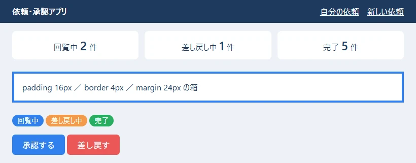
▼ 画面（窓の幅 560px。@media (max-width: 600px) が効いて、カードが 1 列に、ヘッダーが縦に並ぶ）
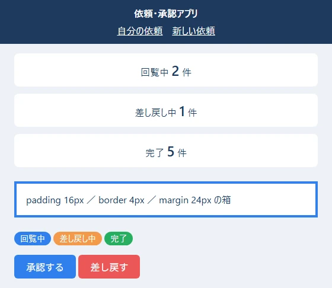
ここがポイント:
| やりたいこと | 書き方 |
|---|---|
| 横一列に並べる | display: flex; |
| 左右の端に分ける・間を空ける | justify-content: space-between;・gap: 16px; |
| 上下の真ん中にそろえる | align-items: center; |
| 何列かのます目にする | display: grid; grid-template-columns: 1fr 1fr 1fr; |
| 中の余白・外の余白・枠線 | padding・margin・border |
| 色を 1 か所で決める | :root { --blue: #2f80ed; } と書き、var(--blue) で使う |
| マウスを乗せた時 | .btn:hover { ... } |
| 画面が狭い時だけ | @media (max-width: 600px) { ... } |
box-sizing: border-box; を付けておくと、width に padding と border が含まれるので、大きさの計算がずれにくくなります。class="badge badge-warn"）付けて、共通の見た目と、違う所（色だけ）を分けて書けます。<meta name="viewport" ...> が無いと、スマホで @media が思ったとおりに効きません。HTML の頭に必ず入れます。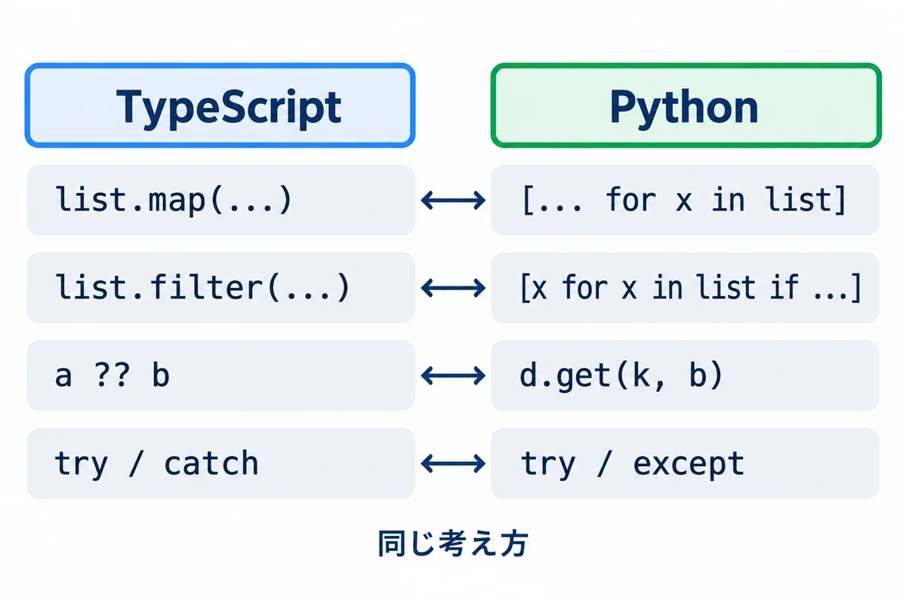
何に使う: 画面に出す文を組み立てる時、入力された文字を数に直す時、金額を見やすくする時。
▶ 書く所と動かし方: PowerShell で cd webapp_learning\samples\02_typescript してから、node src\x01_text_numbers.ts を打ちます。型の確かめは npx tsc です（B-03〜B-07 は全部同じフォルダ）。
// 付録 B-03: 文字列と数でよく使う書き方
const title = " 治具の製作 ";
const requester = "山田 太郎";
const amount = 1234567.891;
// テンプレート文字列: ` で囲み、${ } の中に値や式を書ける
console.log(`依頼者: ${requester}、件名: ${title.trim()}`);
// よく使う文字列の操作
console.log("[" + title.trim() + "]"); // 前後の空白を取る
console.log("文字数:", title.trim().length); // 長さ（日本語も 1 文字は 1）
console.log("REQ-7".padStart(8, "0")); // 前を 0 で埋めて 8 文字に
console.log("a,b,c".split(",")); // 区切って配列に
console.log(["山田", "佐藤"].join("、")); // 配列をつないで 1 つに
console.log("2026-11-02".replaceAll("-", "/")); // 全部置きかえる
console.log("approved".toUpperCase()); // 大文字に
console.log("依頼書.pdf".endsWith(".pdf"), "依頼書.pdf".includes("依頼")); // 終わる？ 含む？
console.log("REQ-0001".slice(4)); // 4 文字目から後ろ（0 から数える）
// 文字列 → 数: Number() は全体が数でないと NaN（数ではない）になる
console.log(Number("42"), Number("42円"), Number.isNaN(Number("42円")));
console.log(Number.parseInt("42円", 10)); // 先頭の数の部分だけ読む
// 数 → 見やすい文字列
console.log(amount.toFixed(2)); // 小数点以下 2 けた
console.log(amount.toLocaleString("ja-JP")); // 3 けたごとの区切り
console.log(Math.round(2.5), Math.floor(2.9), Math.ceil(2.1), Math.max(3, 9, 4));
// 小数の計算の誤差: 0.1 + 0.2 は、ぴったり 0.3 にならない（お金は「円」の整数で持つ）
console.log(0.1 + 0.2, 0.1 + 0.2 === 0.3);
▼ 実行結果
依頼者: 山田 太郎、件名: 治具の製作
[治具の製作]
文字数: 5
000REQ-7
[ 'a', 'b', 'c' ]
山田、佐藤
2026/11/02
APPROVED
true true
0001
42 NaN true
42
1234567.89
1,234,567.891
3 2 3 9
0.30000000000000004 false
▶ ここで初めて出てくるコード
.padStart()（TypeScript）: 文字列の前を、決めた文字で埋めて、決めた長さにするメソッド。"7".padStart(3, "0")は"007"。.split()（JavaScript・TypeScript）: JavaScript・TypeScript で、文字列を区切りで分けて配列にするメソッド。"a,b".split(",")は["a", "b"]。正規表現（/,/）でも区切れます。.replaceAll()（TypeScript）: 文字列の中の、合う所を全部置きかえた新しい文字列を返すメソッド（replaceは最初の 1 つだけ）。.toUpperCase()（TypeScript）: 英字を大文字にした文字列を返すメソッド。.endsWith()（TypeScript）: 文字列が、その文字で終わっていればtrueを返すメソッド。.isNaN()（TypeScript）:Number.isNaN(値)は、値がNaN（数ではない）かを調べる関数です。Number("42円")のように数にできなかった時にNaNになります。.parseInt()（TypeScript）:Number.parseInt("42円", 10)は、文字列の先頭の数の部分だけを整数として読む関数です（10 は 10 進数）。.toFixed()（TypeScript）: 数を、小数点以下の桁を決めた文字列にするメソッド。(1234.5678).toFixed(2)は"1234.57"。.floor()（TypeScript）:Math.floor(x)は、小数を切り捨てて整数にする関数です（切り上げはMath.ceil、四捨五入はMath.round）。
ここがポイント:
` で囲む）の ${ } に、変数や式を書けます。+ でつなぐより読みやすく、まちがいにくいです。Number("42円") は NaN（数ではない）になります。 入力された値を数にする時は、Number.isNaN(...) で確かめてから使います。parseInt は先頭の数の部分だけを読むので、"42円" でも 42 になります（便利ですが、まちがった入力を見逃すこともあります）。0.1 + 0.2 は、ぴったり 0.3 になりません。 コンピューターは小数を 2 進数で持つので、少し誤差が出ます。お金は「円」の整数で持ち、割り算の結果は Math.round などで丸めます。toLocaleString("ja-JP") で 3 けたごとの区切りが付きます。何に使う: 一覧のデータから、表示する物を選んだり、合計を出したり、並べかえたりする時。React の画面でも、いちばんよく使います。
▶ 書く所と動かし方: samples\02_typescript で node src\x02_arrays.ts を打ちます。
// 付録 B-04: 配列（並び）でよく使う書き方
type Req = { id: number; title: string; status: "回覧中" | "承認済み" | "差し戻し"; amount: number };
const requests: Req[] = [
{ id: 1, title: "治具の製作", status: "回覧中", amount: 30000 },
{ id: 2, title: "部品の追加工", status: "承認済み", amount: 12000 },
{ id: 3, title: "棚の取り付け", status: "差し戻し", amount: 8000 },
{ id: 4, title: "工具の修理", status: "回覧中", amount: 5000 },
];
// map: 1 つずつ変換して、新しい配列を作る
console.log(requests.map((r) => r.title));
// filter: 条件に合う物だけの、新しい配列を作る
const circulating = requests.filter((r) => r.status === "回覧中");
console.log("回覧中:", circulating.map((r) => r.id));
// find: 最初に条件に合う物（無ければ undefined）。findIndex は、その位置
console.log(requests.find((r) => r.id === 3)?.title, requests.find((r) => r.id === 9));
console.log(requests.findIndex((r) => r.status === "差し戻し"));
// some: 1 つでも合う？ every: 全部合う？ includes: その値がある？
console.log(requests.some((r) => r.amount > 20000), requests.every((r) => r.amount > 1000));
console.log(["山田", "佐藤"].includes("佐藤"));
// reduce: 1 つの値にまとめる（ここでは合計）
const total = requests.reduce((sum, r) => sum + r.amount, 0);
console.log("合計:", total);
// toSorted: 並べかえた「新しい」配列を作る（元の配列は変わらない）。sort は元の配列を変える
const byAmount = requests.toSorted((a, b) => a.amount - b.amount);
console.log("安い順:", byAmount.map((r) => `${r.title}(${r.amount})`).join(" / "));
console.log("元の順のまま:", requests.map((r) => r.id));
// 足す・取り出す（元の配列が変わる）
const names = ["山田"];
names.push("佐藤", "鈴木"); // 後ろに足す
const last = names.pop(); // 後ろから取り出す
console.log(names, last, names.length);
// スプレッド構文 ...: 配列を広げて、新しい配列を作る（元は変えない）
const more = [...names, "高橋"];
console.log(more, names);
// 分割代入: 配列の中身を、順に変数へ取り出す
const [first, second] = more;
console.log(first, second);
// forEach: 1 つずつ処理する（新しい配列は作らない）。番号も受け取れる
requests.forEach((r, i) => {
if (i < 2) console.log(`${i + 1}件目: ${r.title}`);
});
// 状態ごとに数える（オブジェクトを表のように使う）
const counts: Record<string, number> = {};
for (const r of requests) {
counts[r.status] = (counts[r.status] ?? 0) + 1;
}
console.log(counts);
▼ 実行結果
[ '治具の製作', '部品の追加工', '棚の取り付け', '工具の修理' ]
回覧中: [ 1, 4 ]
棚の取り付け undefined
2
true true
true
合計: 55000
安い順: 工具の修理(5000) / 棚の取り付け(8000) / 部品の追加工(12000) / 治具の製作(30000)
元の順のまま: [ 1, 2, 3, 4 ]
[ '山田', '佐藤' ] 鈴木 2
[ '山田', '佐藤', '高橋' ] [ '山田', '佐藤' ]
山田 佐藤
1件目: 治具の製作
2件目: 部品の追加工
{ '回覧中': 2, '承認済み': 1, '差し戻し': 1 }
▶ ここで初めて出てくるコード
.find()（JavaScript・TypeScript）: 配列から、条件に合う最初の 1 つを返すメソッド。無ければundefinedです。その位置（番号）が欲しい時は.findIndex()を使います。.findIndex()（TypeScript）: 配列の中で、条件に合う最初の物の位置（番号）を返すメソッド。無ければ-1です。.some()（TypeScript）: 配列の中に、条件に合う物が 1 つでもあればtrueを返すメソッド。.every()（TypeScript）: 配列の中身が、全部条件に合えばtrueを返すメソッド。.reduce()（TypeScript）: 配列を 1 つずつ見ながら、1 つの値（合計など）にまとめるメソッド。a.reduce((合計, x) => 合計 + x.amount, 0)の最後の0が、最初の値です。.toSorted()（TypeScript）: 並べかえた新しい配列を返すメソッド（元の配列は変わらない）。React の state を並べかえる時に便利です。.forEach()（TypeScript）: 配列の中身を 1 つずつ処理するメソッド（新しい配列は作らない）。(x, i) => …で、番号iも受け取れます。
ここがポイント:
| やりたいこと | 書き方 | 返る物 |
|---|---|---|
| 全部を変換 | a.map((x) => ...) |
新しい配列 |
| 条件に合う物だけ | a.filter((x) => ...) |
新しい配列 |
| 最初に合う物 | a.find((x) => ...) |
1 つ（無ければ undefined） |
| 合う物があるか・全部合うか | a.some(...)・a.every(...) |
true・false |
| 1 つの値にまとめる | a.reduce((合計, x) => ..., 最初の値) |
まとめた値 |
| 並べかえた新しい配列 | a.toSorted((x, y) => x.amount - y.amount) |
新しい配列 |
| 足す・取り出す | a.push(...)・a.pop() |
（元の配列が変わる） |
| 広げて新しい配列 | [...a, 足す物] |
新しい配列 |
push や sort で変えずに、[...a, x]・filter・toSorted で新しい配列を作って set します（B-12）。(a, b) => a.amount - b.amount は、「マイナスなら a が先、プラスなら b が先」という決まりです。大きい順にするなら b.amount - a.amount にします。?. と ??・分割代入・スプレッド）何に使う: 「依頼」「ユーザー」のようなデータの形を決める時。サーバーから届いた JSON の形を書く時。
▶ 書く所と動かし方: samples\02_typescript で node src\x03_objects_types.ts を打ちます。
// 付録 B-05: オブジェクトと型でよく使う書き方
// type で「形」に名前を付ける。? は「無くてもよい」項目
type User = {
employeeNo: string;
name: string;
mail?: string;
isAdmin: boolean;
};
// interface でも形を書ける（ほぼ同じ。この資料では type を使う）
interface Approval {
order: number;
approver: string;
}
// ユニオン型: 決まった値のどれか 1 つだけを許す
type Status = "回覧中" | "承認済み" | "差し戻し";
const user: User = { employeeNo: "012345", name: "山田 太郎", isAdmin: false };
const approvals: Approval[] = [{ order: 1, approver: "佐藤" }, { order: 2, approver: "鈴木" }];
// ?. は「無ければ、そこで止めて undefined」。?? は「undefined か null なら右の値」
console.log(user.mail?.toUpperCase());
console.log(user.mail ?? "（メール無し）");
// 分割代入: オブジェクトの項目を、同じ名前の変数へ取り出す
const { name, isAdmin } = user;
console.log(name, isAdmin);
// スプレッド構文: 一部だけ変えた「新しい」オブジェクトを作る（元は変えない）
const promoted = { ...user, isAdmin: true };
console.log(user.isAdmin, promoted.isAdmin);
// Object.keys / Object.entries: 項目の名前・名前と値の組を、配列で取り出す
console.log(Object.keys(user));
for (const [key, value] of Object.entries(user)) {
console.log(`${key} = ${value}`);
}
// 型の絞り込み: switch で Status の全部の場合を書く
function label(s: Status): string {
switch (s) {
case "回覧中":
return "回覧中（承認を待っている）";
case "承認済み":
return "承認済み（完了）";
case "差し戻し":
return "差し戻し（直して出し直す）";
}
}
console.log(label("承認済み"));
// typeof で絞り込む: string | number のどちらかを受け取る
function show(value: string | number): string {
if (typeof value === "number") {
return value.toLocaleString("ja-JP") + " 円"; // ここでは number として使える
}
return value.trim(); // ここでは string として使える
}
console.log(show(30000), show(" 見積もり中 "));
// Record<キーの型, 値の型>: 決まったキーをすべて持つ表
const colors: Record<Status, string> = { 回覧中: "青", 承認済み: "緑", 差し戻し: "オレンジ" };
console.log(colors["差し戻し"]);
// as const: 中身を変えられない、決まった値の並びにする
const steps = ["入力", "回覧", "完了"] as const;
console.log(steps.length, steps[2]);
console.log(approvals.map((a) => `${a.order}. ${a.approver}`).join(" → "));
▼ 実行結果
undefined
（メール無し）
山田 太郎 false
false true
[ 'employeeNo', 'name', 'isAdmin' ]
employeeNo = 012345
name = 山田 太郎
isAdmin = false
承認済み（完了）
30,000 円 見積もり中
オレンジ
3 完了
1. 佐藤 → 2. 鈴木
▶ ここで初めて出てくるコード
interface（TypeScript）: オブジェクトの形に名前を付ける書き方（typeとほぼ同じ）。interface Approval { order: number; approver: string; }。.keys()（TypeScript）:Object.keys(オブジェクト)は、オブジェクトの項目の名前を、配列で返す関数です（Object.entriesは名前と値の組）。as const（TypeScript）:as constは、「この値は、中身も含めて変えない、決まった値」にする印です。["下書き", "回覧中"] as constの型は、ただのstring[]ではなく、2 つの決まった文字の並びになります。const { … } =（JavaScript・TypeScript）:const { name, email } = user;は、オブジェクトの中のnameと
ここがポイント:
?（mail?: string）は「無くてもよい項目」です。無い時の値は undefined です。a?.b は「a が無ければ、そこで止めて undefined」、a ?? b は「a が undefined か null なら b」です。2 つを組み合わせると、無いかもしれない値を安全に扱えます。"回覧中" | "承認済み" | "差し戻し"）は、決まった値のどれかだけを許します。打ちまちがい（"承認ずみ"）を npx tsc が見つけてくれます。switch で全部の場合を書くと、場合を足し忘れた時もエラーで分かります。{ ...user, isAdmin: true } は、一部だけ変えた新しいオブジェクトを作ります。元の user は変わりません（結果の false true）。React の state を変える時の決まった書き方です。Record<Status, string> は「Status のどの値にも、string を 1 つずつ持つ表」です。1 つでも書き忘れると、型のエラーになります。何に使う: サーバーからデータを取ってくる（fetch）など、時間のかかる処理を待つ時と、失敗に備える時。
▶ 書く所と動かし方: samples\02_typescript で node src\x04_async_errors.ts を打ちます。
// 付録 B-06: 非同期（async/await）・エラー・JSON でよく使う書き方
import { setTimeout as sleep } from "node:timers/promises";
// 時間のかかる処理のまね（ms ミリ秒待ってから、値を返す）
async function fetchName(id: number, ms: number): Promise<string> {
await sleep(ms);
if (id === 0) {
throw new Error(`id ${id} の人は見つかりません`);
}
return `社員${id}`;
}
// 自分のエラーの種類を作る
class ValidationError extends Error {
field: string;
constructor(field: string, message: string) {
super(message);
this.name = "ValidationError";
this.field = field;
}
}
function checkTitle(title: string): string {
if (title.trim() === "") {
throw new ValidationError("title", "件名を入れてください");
}
return title.trim();
}
async function main() {
// 1. await: 終わるまで待って、結果を受け取る
const a = await fetchName(1, 100);
console.log("1:", a);
// 2. Promise.all: いくつかを同時に待つ（いちばん遅い物の時間で終わる）
const start = Date.now();
const names = await Promise.all([fetchName(2, 200), fetchName(3, 200)]);
console.log("2:", names, Date.now() - start < 350 ? "同時に待った" : "順番に待った");
// 3. try / catch / finally: 失敗を受け止める
try {
await fetchName(0, 50);
} catch (e) {
// catch の e は何が来るか分からないので、Error か確かめてから使う
console.log("3: 失敗:", e instanceof Error ? e.message : e);
} finally {
console.log("3: finally は、成功しても失敗しても最後に動く");
}
// 4. 自分のエラーの種類で分ける
for (const t of [" 治具の製作 ", " "]) {
try {
console.log("4: OK:", checkTitle(t));
} catch (e) {
if (e instanceof ValidationError) {
console.log(`4: 入力の間違い（${e.field}）: ${e.message}`);
} else {
throw e; // 思っていないエラーは、上に投げ直す
}
}
}
// 5. JSON: 文字列 ⇔ オブジェクト。壊れた JSON は JSON.parse でエラーになる
const text = JSON.stringify({ id: 1, title: "治具", approvers: ["佐藤", "鈴木"] });
console.log("5:", text);
const back = JSON.parse(text) as { id: number; title: string; approvers: string[] };
console.log("5:", back.approvers[1]);
try {
JSON.parse("{ id: 1 }");
} catch (e) {
console.log("5: 壊れた JSON:", e instanceof SyntaxError);
}
}
await main();
▼ 実行結果
1: 社員1
2: [ '社員2', '社員3' ] 同時に待った
3: 失敗: id 0 の人は見つかりません
3: finally は、成功しても失敗しても最後に動く
4: OK: 治具の製作
4: 入力の間違い（title）: 件名を入れてください
5: {"id":1,"title":"治具","approvers":["佐藤","鈴木"]}
5: 鈴木
5: 壊れた JSON: true
▶ ここで初めて出てくるコード
.now()（JavaScript・TypeScript）:performance.now()は、ページ（プログラム）が始まってからの時間をミリ秒で返します。Date.now()は、1970 年 1 月 1 日からのミリ秒です。どちらも、かかった時間を計るのに使えます。.all()（TypeScript）:Promise.all([…])は、いくつかのPromise（時間のかかる処理）を同時に待って、全部の結果を配列で返す関数です。1 つでも失敗すると、全体が失敗します。SyntaxError（JavaScript・TypeScript）:SyntaxErrorは、書き方が正しくない時のエラーの種類です。JSON.parse("壊れた文字")は、SyntaxErrorを起こします。sleep()（Node.js）:import { setTimeout as sleep } from "node:timers/promises";で、setTimeoutをsleepという名前で読み込んでいます。await sleep(1000)で、1 秒待ちます。
ここがポイント:
async を付けた関数の中で await を書くと、「終わるまで待って、結果を受け取る」になります。待っている間も、画面などのほかの仕事は止まりません。Promise.all([...]) は、いくつかを同時に待ちます。1 つずつ await するより速く終わります（結果の「同時に待った」）。try { } catch (e) { } finally { } で失敗を受け止めます。catch の e は何が来るか分からない（unknown）ので、e instanceof Error で確かめてから e.message を使います。ValidationError）を作ると、「入力の間違い」と「思っていない失敗」を分けて扱えます。思っていない物は throw e で投げ直します。JSON.stringify（オブジェクト → 文字列）と JSON.parse（文字列 → オブジェクト）。壊れた JSON は SyntaxError になります。何に使う: データと処理をまとめたい時（クラス）、キーで引く表が欲しい時（Map）、重複を消したい時（Set）、締め切りなどの日付を扱う時。
▶ 書く所と動かし方: samples\02_typescript で node src\x05_class_map_date.ts を打ちます。
// 付録 B-07: クラス・Map・Set・日付でよく使う書き方
// クラス: データと、それを扱う関数（メソッド）をまとめる。# の付いた項目は外から見えない
class RequestCounter {
#counts = new Map<string, number>();
add(status: string): void {
this.#counts.set(status, (this.#counts.get(status) ?? 0) + 1);
}
// get を付けると、() 無しで値のように読める
get total(): number {
let sum = 0;
for (const n of this.#counts.values()) sum += n;
return sum;
}
summary(): string {
return [...this.#counts].map(([s, n]) => `${s}:${n}`).join(" ");
}
}
const counter = new RequestCounter();
for (const s of ["回覧中", "承認済み", "回覧中"]) counter.add(s);
console.log(counter.summary(), "合計", counter.total);
// Map: キー → 値の表。キーに何でも使え、入れた順に回せる
const approvers = new Map<number, string>([
[1, "佐藤"],
[2, "鈴木"],
]);
approvers.set(3, "高橋");
console.log(approvers.get(2), approvers.has(9), approvers.size);
for (const [order, name] of approvers) console.log(`${order}番目: ${name}`);
// Set: 同じ値は 1 つしか入らない（重複を消す）
const depts = new Set(["設計", "製造", "設計", "品質"]);
console.log([...depts], depts.has("製造"));
// 日付: 月は 0 から数える（10 は 11 月）。時刻のずれを避けるため、日本時間を指定して表示する
const due = new Date(Date.UTC(2026, 10, 10, 0, 0, 0)); // 2026-11-10 00:00（世界標準時）
console.log(due.toISOString());
console.log(due.toLocaleDateString("ja-JP", { timeZone: "Asia/Tokyo" }));
console.log(due.toLocaleDateString("ja-JP", { timeZone: "Asia/Tokyo", dateStyle: "full" }));
// 日数の差: ミリ秒の差を、1 日のミリ秒で割る
const today = new Date(Date.UTC(2026, 10, 2));
const days = Math.round((due.getTime() - today.getTime()) / (24 * 60 * 60 * 1000));
console.log(`締め切りまで ${days} 日`);
// 数を見やすく: Intl.NumberFormat（通貨の形）
const yen = new Intl.NumberFormat("ja-JP", { style: "currency", currency: "JPY" });
console.log(yen.format(30000));
▼ 実行結果
回覧中:2 承認済み:1 合計 3
鈴木 false 3
1番目: 佐藤
2番目: 鈴木
3番目: 高橋
[ '設計', '製造', '品質' ] true
2026-11-10T00:00:00.000Z
2026/11/10
2026年11月10日火曜日
締め切りまで 8 日
￥30,000
▶ ここで初めて出てくるコード
.set()（TypeScript）:Mapに「キー → 値」を入れる（上書きする）メソッド。.get()（TypeScript）:Mapから、キーで値を取り出すメソッド。無ければundefinedです。.UTC()（TypeScript）:Date.UTC(年, 月, 日, …)は、世界標準時の日時を、1970 年からのミリ秒の数で返す関数です（月は 0 から数える）。new Date(Date.UTC(…))で日時を作ります。.toISOString()（TypeScript）: 日時を、2026-11-10T00:00:00.000Zの形（世界標準時）の文字列にするメソッド。サーバーとのやり取りに使います。.toLocaleDateString()（TypeScript）: 日付を、その国の書き方の文字列にするメソッド。{ timeZone: "Asia/Tokyo" }を付けて、日本時間で表示します。.getTime()（TypeScript）: 日時を、1970 年からのミリ秒の数にするメソッド。2 つの日時の差を計算する時に使います。.NumberFormat()（TypeScript）:new Intl.NumberFormat("ja-JP", { style: "currency", currency: "JPY" })は、数を「￥30,000」のような形にする係を作ります。.format()（TypeScript）:Intl.NumberFormatなどの係で、数や日時を決めた形の文字列にするメソッド。+=（JavaScript・TypeScript）:sum += nはsum = sum + nの短い形です。Map（JavaScript・TypeScript）:new Map()は、キーと値の組を覚えておく入れ物です。.set(キー, 値)・.get(キー)・.has(キー)で使います。Intl（JavaScript・TypeScript）:Intlは、国や言葉に合わせた表示（数の区切り・通貨・日付）の道具が集まった物です。new Intl.NumberFormat("ja-JP").format(1234567)→1,234,567。
ここがポイント:
# で始まる項目（#counts）は、クラスの外から見えません。 外からは add・total・summary だけを使ってもらいます。Map はキー → 値の表で、get・set・has・size を使います。入れた順に回せます。Set は同じ値を 1 つしか持ちません。[...set] で配列に戻せます。10 が 11 月）。いちばんよくある間違いです。timeZone: "Asia/Tokyo" を付けます。 付けないと、動かしたパソコンやサーバーの時間帯で表示され、日付が 1 日ずれることがあります。サーバーとのやり取りは toISOString() の形（2026-11-10T00:00:00.000Z。Z は世界標準時）にそろえます。何に使う: ボタンを押したら数が変わる、開く・閉じるを切りかえる、のように、操作によって画面が変わる所。
▶ 書く所と動かし方: PowerShell で cd webapp_learning\samples\03_react してから npm run dev を打ち、ブラウザで http://localhost:5173/appendix.html を開きます（B-08〜B-12 の全部が 1 ページに出ます。?demo=x01 を後ろに付けると、1 つだけ出ます）。ファイルを書きかえて保存すると、画面がすぐに変わります。止める時は PowerShell で Ctrl ＋ C です。サンプルは src\appendix\ の中にあります。
src\appendix\X01Counter.tsx:
// 付録 B-08: useState とイベント（ボタンを押すと、画面の数が変わる）
import { useState } from "react";
export function X01Counter() {
// useState(最初の値) → [今の値, 値を変える関数]
const [count, setCount] = useState(0);
const [open, setOpen] = useState(false);
return (
<div className="x-card">
<p>承認した数: <b>{count}</b> 件</p>
{/* onClick に「押された時にすること」を渡す。setCount で値を変えると、画面が描き直される */}
<button onClick={() => setCount(count + 1)}>＋1</button>{" "}
<button onClick={() => setCount(0)} disabled={count === 0}>
0 に戻す
</button>
{/* 条件で表示を変える: 条件 ? A : B と、条件 && A */}
<p>{count >= 3 ? "たくさん承認しました" : "まだ少しです"}</p>
<button onClick={() => setOpen(!open)}>{open ? "説明を閉じる" : "説明を開く"}</button>
{open && <p className="x-note">開いている時だけ、この説明が出ます。</p>}
</div>
);
}
▶ ここで初めて出てくるコード
{/* */}（React）: JSX の中のコメントは、{/* … */}と書きます。
▼ 画面（「＋1」を 3 回押して、「説明を開く」を押したところ）
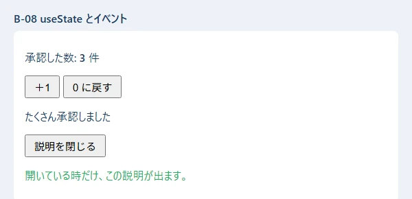
ここがポイント:
const [count, setCount] = useState(0); で「覚えておく値」を作ります。値を変える時は、必ず setCount(新しい値) を使います。count = 5 のように直接書きかえても、画面は描き直されません。{ } の中に、JavaScript の式を書けます。条件 ? A : B で 2 つのどちらかを、条件 && A で「条件が true の時だけ A」を出します。disabled={count === 0} のように、属性にも式を書けます。0 の時は「0 に戻す」が押せなくなります。何に使う: 依頼の一覧など、配列を画面に並べる時。検索の欄で絞り込む時。
▶ 書く所と動かし方: B-08 と同じく npm run dev のまま、src\appendix\X02List.tsx を開きます。
// 付録 B-09: 配列を一覧にする（map と key）・絞り込み・空の時の表示
import { useState } from "react";
type Item = { id: number; title: string; status: "回覧中" | "差し戻し中" | "完了" };
const ITEMS: Item[] = [
{ id: 1, title: "治具の製作", status: "回覧中" },
{ id: 2, title: "部品の追加工", status: "完了" },
{ id: 3, title: "棚の取り付け", status: "差し戻し中" },
{ id: 4, title: "治具の改造", status: "回覧中" },
];
export function X02List() {
const [word, setWord] = useState("");
const [onlyOpen, setOnlyOpen] = useState(false);
// 表示する物を、毎回の描画のたびに計算する（state にしない）
const shown = ITEMS.filter((it) => it.title.includes(word)).filter((it) => !onlyOpen || it.status !== "完了");
return (
<div className="x-card">
<input value={word} onChange={(e) => setWord(e.target.value)} placeholder="件名で探す" />{" "}
<label>
<input type="checkbox" checked={onlyOpen} onChange={(e) => setOnlyOpen(e.target.checked)} /> 完了を隠す
</label>
<p>{shown.length} 件</p>
{shown.length === 0 ? (
<p className="x-note">合う依頼がありません</p>
) : (
<ul>
{/* map で 1 件ずつ <li> にする。key には、変わらない番号（id）を渡す */}
{shown.map((it) => (
<li key={it.id}>
{it.title}（{it.status}）
</li>
))}
</ul>
)}
</div>
);
}
▶ ここで初めて出てくるコード
checked=（React）:checked={onlyOpen}は、チェックボックスの ON・OFF を、変数と結び付けます。
▼ 画面（検索の欄に「治具」と入れたところ ／ 「ねじ」と入れたところ）
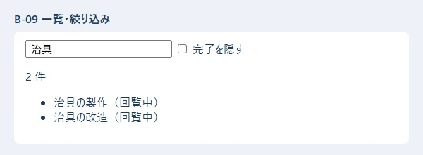
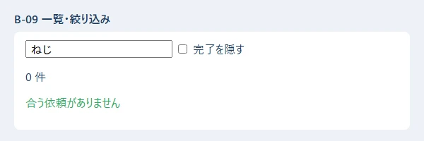
ここがポイント:
map で 1 件ずつタグにし、key に「変わらない番号」（id）を渡します。 key が無いと、React が「どの行がどれか」を見分けられず、警告が出ます。配列の番号（i）を key にすると、並べかえた時に入力中の値がずれることがあるので、id を使います。shown）は state にしません。 元のデータと検索の文字から毎回計算できる物は、計算すればよい、が React の決まりです。state を増やすほど、ずれの元になります。何に使う: 依頼の入力画面のように、いくつかの入力欄の値を集めて送る時。
▶ 書く所と動かし方: src\appendix\X03Form.tsx を開きます。
// 付録 B-10: フォーム（入力欄の値を state で持つ・入力の検査・送る）
import { useState, type FormEvent } from "react";
type Form = { title: string; kind: string; urgent: boolean };
export function X03Form() {
// 入力欄の値を、1 つのオブジェクトの state で持つ
const [form, setForm] = useState<Form>({ title: "", kind: "new", urgent: false });
const [error, setError] = useState("");
const [sent, setSent] = useState<Form | null>(null);
function handleSubmit(e: FormEvent<HTMLFormElement>) {
e.preventDefault(); // ブラウザがページを移動しないようにする（React で送る時の決まり）
if (form.title.trim() === "") {
setError("件名を入れてください");
return;
}
setError("");
setSent(form); // 本当のアプリでは、ここで fetch してサーバーへ送る
}
return (
<form className="x-card" onSubmit={handleSubmit}>
<label>
件名{" "}
{/* value と onChange の組: 入力欄の中身は、いつも state と同じになる */}
<input value={form.title} onChange={(e) => setForm({ ...form, title: e.target.value })} />
</label>{" "}
<select value={form.kind} onChange={(e) => setForm({ ...form, kind: e.target.value })}>
<option value="new">新しく作る</option>
<option value="fix">直す</option>
</select>{" "}
<label>
<input
type="checkbox"
checked={form.urgent}
onChange={(e) => setForm({ ...form, urgent: e.target.checked })}
/>{" "}
至急
</label>{" "}
<button type="submit">送る</button>
{error && <p className="x-error">{error}</p>}
{sent && (
<p className="x-note">
送った内容: {sent.title.trim()}／{sent.kind === "new" ? "新しく作る" : "直す"}／
{sent.urgent ? "至急" : "通常"}
</p>
)}
</form>
);
}
▼ 画面（何も入れずに「送る」を押したところ ／ 入れてから「送る」を押したところ）
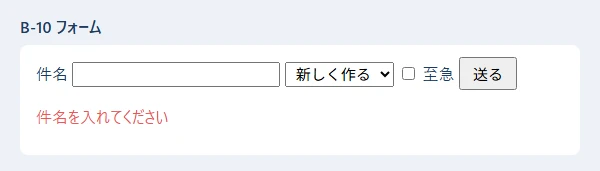
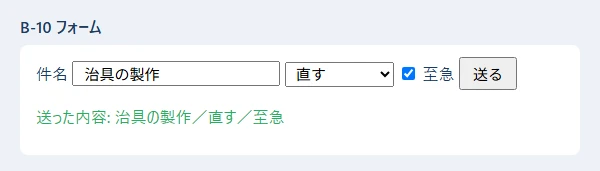
ここがポイント:
value={...} と onChange={...} の組で、入力欄の中身と state をいつも同じにします（制御されたコンポーネント）。チェックボックスは checked と e.target.checked を使います。setForm({ ...form, title: e.target.value }) は「ほかの項目はそのままで、title だけ変えた新しいオブジェクト」を作っています（B-05 のスプレッド構文）。e.preventDefault() を忘れると、ブラウザがページを読み直してしまい、入力が消えます。何に使う: 画面を開いた時に、サーバーから一覧を取ってくる時。
▶ 書く所と動かし方: src\appendix\X04Fetch.tsx を開きます。取ってくるデータは public\appendix_requests.json に置いてあります（public の中のファイルは、http://localhost:5173/appendix_requests.json で読めます）。
// 付録 B-11: useEffect で、画面が出たあとにデータを取ってくる（読み込み中・失敗・成功）
import { useEffect, useState } from "react";
type Row = { id: number; title: string };
export function X04Fetch({ url }: { url: string }) {
const [rows, setRows] = useState<Row[] | null>(null); // null は「まだ届いていない」
const [error, setError] = useState("");
// useEffect(する事, [見張る値]): 最初の描画のあと、url が変わった時に動く
useEffect(() => {
let ignore = false; // 古い結果を捨てるための印
setRows(null);
setError("");
fetch(url)
.then((res) => {
if (!res.ok) throw new Error(`サーバーの返事が ${res.status} でした`);
return res.json() as Promise<Row[]>;
})
.then((data) => {
if (!ignore) setRows(data);
})
.catch((e: unknown) => {
if (!ignore) setError(e instanceof Error ? e.message : String(e));
});
// 後片づけ: url が変わった・画面から消えた時に呼ばれる
return () => {
ignore = true;
};
}, [url]);
if (error) return <p className="x-card x-error">読み込めませんでした: {error}</p>;
if (rows === null) return <p className="x-card">読み込み中…</p>;
return (
<ul className="x-card">
{rows.map((r) => (
<li key={r.id}>
{r.id}. {r.title}
</li>
))}
</ul>
);
}
▼ 画面（読めた時 ／ 無いファイル /no_such_file.json を読もうとした時）
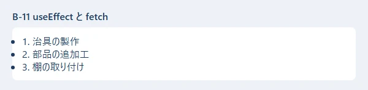
<img src="../images/L11-s10_fetch_err.webp" alt="赤い字で、読み込めませんでした: Unexpected token '<', "<!doctype "... is not valid JSON" style="width: 70%; border: 1px solid #cbd5e1;">
ここがポイント:
useEffect(() => { ... }, [url]) は「画面を描いたあとに、url が変わった時だけ」動きます。[] にすると、最初の 1 回だけです。[ ] を書き忘れると、描くたびに動いて、何度も fetch してしまいます。null（まだ）・error（失敗）・配列（成功）で分けています。res.ok を確かめます。 fetch は、サーバーが 404 や 500 を返しても「失敗」にはなりません（通信できれば成功扱い）。<!doctype html>...）を返します。それを JSON として読もうとして、「< は JSON の始まりではない」というエラーになりました。この文が出たら、URL のまちがいを疑います。return () => { ignore = true; } は後片づけです。URL がすぐ変わった時に、古い返事で画面を上書きしないようにしています。何に使う: 同じ見た目のボタンや枠を何度も使う時、画面が大きくなって 1 つのファイルでは読みにくくなった時。
▶ 書く所と動かし方: src\appendix\X05Props.tsx を開きます。
// 付録 B-12: 部品に分ける（props で渡す・子から親へ知らせる・children）
import { useState, type ReactNode } from "react";
// 子の部品 1: 値と「押された時の関数」を props で受け取る
function ApproveButton({ name, onApprove }: { name: string; onApprove: (name: string) => void }) {
return <button onClick={() => onApprove(name)}>{name} さんとして承認</button>;
}
// 子の部品 2: children は、タグの間に書いた中身
function Panel({ title, children }: { title: string; children: ReactNode }) {
return (
<section className="x-card">
<h3>{title}</h3>
{children}
</section>
);
}
export function X05Props() {
// 状態は「使う部品たちの、いちばん近い親」に置く（ここでは X05Props）
const [log, setLog] = useState<string[]>([]);
function handleApprove(name: string) {
setLog((prev) => [...prev, `${name} さんが承認しました`]); // 前の値から作る時は関数で渡す
}
return (
<Panel title="回覧">
<ApproveButton name="佐藤" onApprove={handleApprove} />{" "}
<ApproveButton name="鈴木" onApprove={handleApprove} />
<ol>
{log.map((line, i) => (
<li key={i}>{line}</li>
))}
</ol>
</Panel>
);
}
▶ ここで初めて出てくるコード
<h3>（React）: 3 番目の大きさの見出しのタグ。
▼ 画面（「佐藤 さんとして承認」→「鈴木 さんとして承認」の順に押したところ）
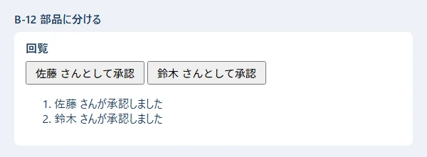
ここがポイント:
onApprove）を props で渡し、子がそれを呼びます。 state は親が持ち、子は「押された」と知らせるだけです。children は、<Panel>...</Panel> のタグの間に書いた中身です。枠だけを部品にして、中身は使う側が決められます。setLog((prev) => [...prev, 新しい行]) のように関数で渡します。 続けて何度も呼んでも、正しく積み上がります。何に使う: 画面やメールに出す文を組み立てる時、CSV などから読んだ文字を数に直す時。
▶ 書く所と動かし方: PowerShell で cd webapp_learning\samples\04_python し、仮想環境を作ってあれば（04 の 1 章）、.\.venv\Scripts\python.exe x01_text_numbers.py を打ちます（B-13〜B-17 は全部同じフォルダ）。Python は字下げに意味があるので、コードは枠の右上の「コピー」から HTML 版でコピーします（00 の 6.7）。
# 付録 B-11: 文字列と数でよく使う書き方
title = " 治具の製作 "
requester = "山田 太郎"
amount = 1234567.891
# f 文字列: f"..." の { } に値や式を書ける。: のあとで形を決められる
print(f"依頼者: {requester}、件名: {title.strip()}")
print(f"{amount:,.2f}") # 3 けたごとの区切り ＋ 小数点以下 2 けた
print(f"{42:05d}") # 5 けたになるまで前を 0 で埋める
print(f"[{'右':>6}] [{'左':<6}] [{'中':^6}]") # 幅 6 で右・左・中央に寄せる
print(f"{0.256:.1%}") # 割合（% の形）
# よく使う文字列の操作
print("[" + title.strip() + "]") # 前後の空白を取る
print(len(title.strip())) # 文字の数
print("a,b,c".split(",")) # 区切ってリストに
print("、".join(["山田", "佐藤"])) # リストをつないで 1 つに（区切り文字の方に .join）
print("2026-11-02".replace("-", "/")) # 置きかえる
print("approved".upper(), "APPROVED".lower())
print("依頼書.pdf".endswith(".pdf"), "依頼" in "依頼書.pdf") # 終わる？ 含む？
print("REQ-0001"[4:], "REQ-0001"[:3], "REQ-0001"[-1]) # 切り出し（0 から数える。-1 は最後）
print("7".zfill(4)) # 前を 0 で埋めて 4 けたに
# 文字列 → 数: int() / float()。数でない時は ValueError
print(int("42") + 1, float("3.5") * 2)
try:
int("42円")
except ValueError as e:
print("数にできない:", e)
# 数の計算
print(7 / 2, 7 // 2, 7 % 2, 2 ** 10) # 割り算・切り捨ての割り算・余り・累乗
print(round(2.5), round(3.5), round(2.675, 2)) # round は「偶数への丸め」と誤差に注意
print(max(3, 9, 4), min([5, 1, 8]), sum([1, 2, 3]), abs(-5))
print(0.1 + 0.2, 0.1 + 0.2 == 0.3) # 小数の誤差（お金は「円」の整数で持つ）
▼ 実行結果
依頼者: 山田 太郎、件名: 治具の製作
1,234,567.89
00042
[ 右] [左 ] [ 中 ]
25.6%
[治具の製作]
5
['a', 'b', 'c']
山田、佐藤
2026/11/02
APPROVED approved
True True
0001 REQ 1
0007
43 7.0
数にできない: invalid literal for int() with base 10: '42円'
3.5 3 1 1024
2 4 2.67
9 1 6 5
0.30000000000000004 False
▶ ここで初めて出てくるコード
.zfill()（Python）: 文字列の前を 0 で埋めて、決めた桁にするメソッド。"7".zfill(4)は"0007"。float()（Python）: 文字列などを小数にする関数。float("3.5")は 3.5。数でない時はValueError。round()（Python）: 数を丸める関数。round(2.675, 2)は小数第 2 位まで。ちょうど真ん中（2.5）は、偶数の方へ丸める（round(2.5)は 2、round(3.5)は 4）ので注意します。max()（Python）: いちばん大きい物を返す関数。max(3, 9, 4)は 9、max([5, 1, 8])は 8。いちばん小さい物はmin()です。min()（Python）: Python で、いちばん小さい値を返す関数。min(1, 5, 3)は 1。sum()（Python）: リストなどの中身を全部足した合計を返す関数。sum([1, 2, 3])は 6。abs()（Python）: 絶対値（マイナスを取った値）を返す関数。{値:,}（Python）: f 文字列の{amount:,}の,は、3 けたごとに,を入れる指定です（1234567→1,234,567）。{amount:,.2f}なら、区切りと小数点以下 2 けたの両方です。{値:.桁f}（Python）: f 文字列の{ratio:.2f}の.2fは、「小数点の下を 2 けたにした小数」で表示する指定です（3.14159→3.14）。{値:0幅}（Python）: f 文字列の{42:05d}の05は、「5 けたになるまで、前を 0 で埋める」指定です（00042）。{値:d}（Python）: f 文字列の{n:d}のdは、整数として表示する指定です。{値:>幅}（Python）: f 文字列の{'右':>6}の>と数は、「6 文字分の場所に、右寄せで入れる」指定です。{値:<幅}（Python）: f 文字列の{where:<16}の<と数は、「16 文字分の場所に、左寄せで入れる」指定です。足りない分は右に空白が入り、後ろの列がそろいます。>なら右寄せ、^なら中央です。{値:^幅}（Python）: f 文字列の{'中':^6}の^と数は、「6 文字分の場所の、真ん中に入れる」指定です。{値:.桁%}（Python）: f 文字列の{0.256:.1%}の%は、100 倍して%を付ける指定です（25.6%）。.1は小数点の下のけたの数です。//（Python）: Python の7 // 2は、割り算の答えの小数を切り捨てた整数（3）です。7 / 2は3.5です。**（Python）: Python の2 ** 10は、2 の 10 乗（1024）です。%（Python）: Python の7 % 2は、割った余り（1）です。ValueError（Python）:ValueErrorは、「型は合っているが、値がおかしい」時のエラーです。int("abc")で起きます。
ここがポイント:
| 書き方 | 意味 | 結果 |
|---|---|---|
f"{amount:,.2f}" |
3 けた区切り＋小数 2 けた | 1,234,567.89 |
f"{42:05d}" |
5 けたになるまで 0 で埋める | 00042 |
f"{'右':>6}" |
幅 6 で右寄せ（< 左・^ 中央） |
右 |
f"{0.256:.1%}" |
割合 | 25.6% |
s.strip() |
前後の空白を取る | |
s.split(",")・"、".join(リスト) |
分ける・つなぐ | join は区切り文字の方に付ける |
s[4:]・s[:3]・s[-1] |
切り出し | 0 から数える。-1 は最後の 1 文字 |
int("42円") は ValueError になります。 外から来た文字を数に直す時は、try・except ValueError で受け止めます（B-16）。7 / 2 は 3.5、7 // 2 は 3（切り捨て）です。TypeScript と違い、Python の / は小数の結果になります。round(2.5) は 2 です。Python の round は「ちょうど半分なら偶数の方へ」丸めます。round(2.675, 2) が 2.67 になるのは、小数の誤差のためです。お金の計算は、整数の「円」で持つか、decimal という標準の部品を使います。>6 など）は文字の数で数えるので、日本語は見た目の位置がずれます（結果の [ 中 ]）。何に使う: 依頼の一覧から選ぶ・並べかえる・数える・グループに分ける時。Django の画面や API の中で、毎日のように使います。
▶ 書く所と動かし方: samples\04_python で .\.venv\Scripts\python.exe x02_collections.py を打ちます。
# 付録 B-12: リスト・辞書・集合・タプルでよく使う書き方
from collections import Counter, defaultdict
requests = [
{"id": 1, "title": "治具の製作", "status": "回覧中", "amount": 30000},
{"id": 2, "title": "部品の追加工", "status": "承認済み", "amount": 12000},
{"id": 3, "title": "棚の取り付け", "status": "差し戻し", "amount": 8000},
{"id": 4, "title": "工具の修理", "status": "回覧中", "amount": 5000},
]
# リスト: 足す・取り出す・並べかえる
names = ["山田"]
names.append("佐藤") # 後ろに足す
names.insert(0, "鈴木") # 0 番目に入れる
last = names.pop() # 後ろから取り出す
print(names, last, len(names))
# sorted は「新しい」リストを返す。key で「何で並べるか」を決める。reverse=True で逆順
by_amount = sorted(requests, key=lambda r: r["amount"])
print([r["title"] for r in by_amount])
print([r["id"] for r in sorted(requests, key=lambda r: r["amount"], reverse=True)])
# 内包表記: for と if を 1 行で書いて、新しいリストを作る
circulating = [r["id"] for r in requests if r["status"] == "回覧中"]
print("回覧中:", circulating)
print("合計:", sum(r["amount"] for r in requests))
print("2 万円より高い物がある？", any(r["amount"] > 20000 for r in requests))
# enumerate: 番号つきで回す（start=1 で 1 から）。zip: 2 つを組にして回す
for i, r in enumerate(requests[:2], start=1):
print(f"{i}件目: {r['title']}")
for order, name in zip([1, 2], ["佐藤", "鈴木"]):
print(f"{order}番目の承認者: {name}")
# 辞書: get は、キーが無い時の値を決められる（[ ] だと KeyError）
user = {"employee_no": "012345", "name": "山田 太郎"}
print(user.get("mail", "（メール無し）"))
user["dept"] = "設計部" # 足す・書きかえる
for key, value in user.items(): # キーと値を組で回す
print(f"{key} = {value}")
print(list(user.keys()), "name" in user)
# 辞書の内包表記: id → 件名 の表を作る
titles = {r["id"]: r["title"] for r in requests}
print(titles[3])
# Counter: 数え上げ。most_common で多い順
counts = Counter(r["status"] for r in requests)
print(counts, counts.most_common(1))
# defaultdict: 無いキーを初めて使う時、自動で空のリストを作る（グループ分け）
by_status = defaultdict(list)
for r in requests:
by_status[r["status"]].append(r["id"])
print(dict(by_status))
# 集合（set）: 重複を消す・共通・差
a = {"設計", "製造", "品質"}
b = {"製造", "総務"}
print(sorted(a | b), sorted(a & b), sorted(a - b))
print(sorted(set(["設計", "製造", "設計"])))
# タプル: 変えられない組。複数の値を返す・受け取る時によく使う
point = (10, 20)
x, y = point
print(x + y)
▼ 実行結果
['鈴木', '山田'] 佐藤 2
['工具の修理', '棚の取り付け', '部品の追加工', '治具の製作']
[1, 2, 3, 4]
回覧中: [1, 4]
合計: 55000
2 万円より高い物がある？ True
1件目: 治具の製作
2件目: 部品の追加工
1番目の承認者: 佐藤
2番目の承認者: 鈴木
（メール無し）
employee_no = 012345
name = 山田 太郎
dept = 設計部
['employee_no', 'name', 'dept'] True
棚の取り付け
Counter({'回覧中': 2, '承認済み': 1, '差し戻し': 1}) [('回覧中', 2)]
{'回覧中': [1, 4], '承認済み': [2], '差し戻し': [3]}
['品質', '総務', '製造', '設計'] ['製造'] ['品質', '設計']
['製造', '設計']
30
▶ ここで初めて出てくるコード
.insert()（Python）: リストの、決めた位置に入れるメソッド。names.insert(0, "鈴木")は先頭に入れます。.pop()（Python）: リストの最後（または決めた位置）の 1 つを取り出すメソッド（リストから消える）。.items()（Python）: 辞書の「キーと値」の組を 1 つずつ取り出せる形にするメソッド。for k, v in d.items():で、両方を同時に使えます。.keys()（Python）: 辞書のキーだけを、1 つずつ取り出せる形で返すメソッド。list(d.keys())でリストにできます。.most_common()（Python）:Counterの、多い順に「(値, 数)」の組を並べたリストを返すメソッド。most_common(1)で、いちばん多い物だけ。sorted()（Python）: 並べかえた新しいリストを返す関数。sorted(並び, key=lambda r: r["amount"], reverse=True)のkeyで「何で並べるか」、reverse=Trueで大きい順。zip()（Python）: 2 つ以上の並びを、同じ番号どうしの組にして取り出す関数。for a, b in zip(順番, 名前):。list()（Python）: 並び（keys()の結果や文字列など）から、新しいリストを作る関数。list("abc")は["a", "b", "c"]。defaultdict()（Python）: 無いキーを初めて使った時に、自動で初期値（listなら空のリスト）を作る辞書。グループ分けに便利です。(式 for … in …)（Python）:sum(x * 2 for x in nums)のように( )の中に書く内包表記は、値を 1 つずつ作って渡す物（ジェネレーター）です。並びを作らないので、メモリを使いません。Counter（Python）:Counter(並び)（collections）は、同じ物がいくつずつあるかを数えます。Counter(["a", "b", "a"])→{'a': 2, 'b': 1}。
ここがポイント:
[式 for x in 並び if 条件] は、TypeScript の filter と map を 1 行で書いた物です。sum(... for r in requests) のように [ ] を外すと、リストを作らずに合計だけを出せます。sorted(並び, key=lambda r: r["amount"]) の key は「何で並べるか」を返す小さな関数です。reverse=True で大きい順。sorted は新しいリストを返し、リスト.sort() は元のリストを並べかえます。d.get(キー, 無い時の値) は、キーが無くてもエラーになりません。d[キー] は、キーが無いと KeyError で止まります。Counter（数え上げ）と defaultdict(list)（グループ分け）は、collections という標準の部品です。自分で if キー not in d: を書くより短く、まちがいにくくなります。|（どちらかにある）・&（両方にある）・-（左だけにある）。集合は順番を持たないので、表示する時は sorted で並べます。何に使う: 処理に名前を付けてまとめる時（関数）、データとその扱い方をまとめる時（クラス）。Django のモデルもクラスです。
▶ 書く所と動かし方: samples\04_python で .\.venv\Scripts\python.exe x03_functions_classes.py を打ちます。
# 付録 B-13: 関数とクラスでよく使う書き方
from dataclasses import dataclass, field
from enum import StrEnum
# 既定値つきの引数・名前付きで渡す引数
def make_title(name: str, kind: str = "依頼", urgent: bool = False) -> str:
mark = "【至急】" if urgent else ""
return f"{mark}{name}の{kind}"
print(make_title("治具"))
print(make_title("治具", "見積もり"))
print(make_title("治具", urgent=True)) # 名前を付けて渡すと、順番を気にしなくてよい
# *args: いくつでも受け取る（タプルになる）。**kwargs: 名前付きでいくつでも（辞書になる）
def total(*amounts: int, **options: str) -> str:
unit = options.get("unit", "円")
return f"{sum(amounts):,}{unit}"
print(total(1000, 2500, 300))
print(total(5, 7, unit="個"))
# 複数の値を返す（本当はタプルを 1 つ返している）
def min_max(values: list[int]) -> tuple[int, int]:
return min(values), max(values)
low, high = min_max([30000, 12000, 8000])
print(low, high)
# StrEnum: 決まった値の一覧（文字列としても使える）
class Status(StrEnum):
CIRCULATING = "回覧中"
APPROVED = "承認済み"
RETURNED = "差し戻し"
# クラス: データと、それを扱う関数（メソッド）をまとめる
class Request:
def __init__(self, title: str, amount: int): # 作る時に呼ばれる
self.title = title
self.amount = amount
self.status = Status.CIRCULATING
def approve(self) -> None: # self は「自分」
self.status = Status.APPROVED
@property # () 無しで値のように読める
def is_expensive(self) -> bool:
return self.amount >= 20000
def __str__(self) -> str: # print した時の形
return f"{self.title}（{self.amount:,}円・{self.status}）"
r = Request("治具の製作", 30000)
print(r, r.is_expensive)
r.approve()
print(r, r.status == Status.APPROVED, r.status == "承認済み")
# @dataclass: 項目を書くだけで、__init__・__repr__・== を自動で作る
@dataclass
class Approval:
order: int
approver: str
comments: list[str] = field(default_factory=list) # リストの既定値はこう書く
done: bool = False
a1 = Approval(1, "佐藤")
a2 = Approval(1, "佐藤")
a1.comments.append("確認しました")
print(a1)
print(a1 == a2, Approval(2, "鈴木", done=True))
▼ 実行結果
治具の依頼
治具の見積もり
【至急】治具の依頼
3,800円
12個
8000 30000
治具の製作（30,000円・回覧中） True
治具の製作（30,000円・承認済み） True True
Approval(order=1, approver='佐藤', comments=['確認しました'], done=False)
False Approval(order=2, approver='鈴木', comments=[], done=True)
▶ ここで初めて出てくるコード
@property（Python）: クラスのメソッドの上に付けると、()無しで値のように読めるようにする印。*args（Python）:def f(*args):の*argsは、「いくつでも引数を受け取り、タプル（並び）にまとめる」書き方です。*並び（Python）:f(*items)のように、呼ぶ時に並びの前に*を付けると、中身を、1 つずつの引数としてばらして渡します。__init__（Python）:def __init__(self, …):は、クラスから物を作る時（Item("題", 100)）に、自動で呼ばれる関数です。受け取った値をself.title = titleのように覚えます。__repr__（Python）:def __repr__(self):は、プログラマー向けの表示（repr(物)）の文字を決める関数です。
ここがポイント:
kind: str = "依頼"）は、渡さなければ既定値になります。名前を付けて渡す（urgent=True）と、順番を気にしなくてよく、読む人にも意味が分かります。*amounts はいくつでも受け取る（タプルになる）、**options は名前付きでいくつでも受け取る（辞書になる）引数です。return min(values), max(values) は、値を 2 つ返しています（本当はタプル 1 つ）。受け取る側は low, high = ... で分けます。__init__ は作る時に呼ばれ、self は「その 1 つ」を指します。__str__ は print した時の形、@property は () 無しで読める値です。@dataclass を付けると、項目を並べるだけで __init__・表示の形（Approval(order=1, ...)）・== の比べ方を自動で作ってくれます。リストの既定値は field(default_factory=list) と書きます（= [] と書くと、全部の物で同じリストを使い回してしまうため、Python がエラーにします）。StrEnum は「決まった値の一覧」で、文字列としても比べられます（r.status == "承認済み" が True）。何に使う: 入力のまちがいを伝える時、設定やデータをファイルに読み書きする時、CSV を取り込む・書き出す時。
▶ 書く所と動かし方: samples\04_python で .\.venv\Scripts\python.exe x04_errors_files.py を打ちます。プログラムは work フォルダを作り、最後に消します。
# 付録 B-14: エラー・ファイル・JSON・CSV でよく使う書き方
import csv
import json
import shutil
from pathlib import Path
class TitleError(ValueError):
"""件名の間違い（自分で作るエラーの種類）"""
def check_title(title: str) -> str:
if not title.strip():
raise TitleError("件名を入れてください") # raise でエラーを起こす
return title.strip()
# try / except / else / finally
for t in [" 治具の製作 ", " "]:
try:
ok = check_title(t)
except TitleError as e:
print("入力の間違い:", e)
else:
print("OK:", ok) # エラーが起きなかった時だけ
finally:
print("（毎回ここを通る）")
# Path: ファイルとフォルダの場所を扱う。/ でつなげる
work = Path("work")
data = work / "data"
data.mkdir(parents=True, exist_ok=True) # 途中のフォルダもまとめて作る
# 書く・読む（日本語を扱う時は encoding="utf-8" を必ず付ける）
memo = data / "memo.txt"
memo.write_text("1 行目\n2 行目\n", encoding="utf-8")
with memo.open("a", encoding="utf-8") as f: # with: 使い終わると自動で閉じる
f.write("3 行目（書き足し）\n")
for i, line in enumerate(memo.read_text(encoding="utf-8").splitlines(), start=1):
print(f"{i}: {line}")
print(memo.exists(), memo.name, memo.suffix, memo.stat().st_size, "バイト")
# JSON: ensure_ascii=False で日本語をそのまま、indent=2 で読みやすく
req = {"id": 1, "title": "治具の製作", "approvers": ["佐藤", "鈴木"]}
(data / "req.json").write_text(json.dumps(req, ensure_ascii=False, indent=2), encoding="utf-8")
back = json.loads((data / "req.json").read_text(encoding="utf-8"))
print(back["approvers"][1], json.dumps(back, ensure_ascii=False))
# CSV: DictWriter で書いて、DictReader で読む（Excel で開くなら encoding="utf-8-sig"）
rows = [{"no": "012345", "name": "山田 太郎"}, {"no": "012346", "name": "佐藤 花子"}]
with (data / "users.csv").open("w", encoding="utf-8-sig", newline="") as f:
writer = csv.DictWriter(f, fieldnames=["no", "name"])
writer.writeheader()
writer.writerows(rows)
with (data / "users.csv").open(encoding="utf-8-sig", newline="") as f:
for row in csv.DictReader(f):
print(row["no"], row["name"])
# フォルダの中の一覧（並べかえてから）
print(sorted(p.name for p in data.iterdir()))
# 無いファイルを読むと FileNotFoundError
try:
(data / "none.txt").read_text(encoding="utf-8")
except FileNotFoundError:
print("ファイルがありません")
shutil.rmtree(work) # 片づけ: フォルダごと消す（よく確かめて使う）
print("work は残っている？", work.exists())
▼ 実行結果
OK: 治具の製作
（毎回ここを通る）
入力の間違い: 件名を入れてください
（毎回ここを通る）
1: 1 行目
2: 2 行目
3: 3 行目（書き足し）
True memo.txt .txt 48 バイト
鈴木 {"id": 1, "title": "治具の製作", "approvers": ["佐藤", "鈴木"]}
012345 山田 太郎
012346 佐藤 花子
['memo.txt', 'req.json', 'users.csv']
ファイルがありません
work は残っている？ False
▶ ここで初めて出てくるコード
finally（Python）:try … exceptのあと、成功しても失敗しても最後に必ず動く所。.write_text()（Python）:Pathのファイルに、文字列を書くメソッド。encoding="utf-8"を付けます。.read_text()（Python）:Pathのファイルの中身を、全部文字列として読むメソッド。encoding="utf-8"を付けて読みます。.splitlines()（Python）: 文字列を、行ごとに分けてリストにするメソッド（改行の文字は付かない）。.stat()（Python）: ファイルの情報（大きさst_size・日時など）を取り出すメソッド。.loads()（Python）: 文字列から読み取るメソッド。tomllib.loads(文字列)は TOML、json.loads(文字列)は JSON を、Python の辞書にします。.DictWriter()（Python）:csv.DictWriter(ファイル, fieldnames=[…])は、辞書を 1 行ずつ CSV に書く係を作る関数です。.writeheader()（Python）: CSV の 1 行目（見出し）を書くメソッド。.writerows()（Python）: 辞書のリストを、まとめて CSV の行として書くメソッド。.iterdir()（Python）:Pathのフォルダの中身を、1 つずつ取り出すメソッド（順番は決まっていないので、sortedで並べる）。.rmtree()（Python）:shutil.rmtree(フォルダ)は、フォルダを中身ごと消す関数です。ごみ箱には入らないので、よく確かめて使います。FileNotFoundError（Python）:FileNotFoundErrorは、無いファイルを開こうとした時のエラーです。.suffix（Python）:Pathの.suffixは、拡張子（.txt）です。.nameはファイル名、.stemは拡張子を除いた名前です。
ここがポイント:
try → except（失敗した時）→ else（失敗しなかった時だけ）→ finally（どちらでも最後に） の順に動きます。raise TitleError("...") で、自分のエラーを起こします。ValueError を元にして作ると、「値がおかしい」という種類のエラーとして扱えます。encoding="utf-8" を付けます。 付けないと、Windows では古い文字コード（Shift_JIS）で読み書きされ、文字化けやエラーの元になります。with ... as f: の中で使ったファイルは、抜ける時に自動で閉じます。Path("work") / "data" のように、/ でパスをつなげます。mkdir(parents=True, exist_ok=True) は「途中のフォルダもまとめて作る。もうあってもよい」です。memo.txt が 48 バイトなのは、日本語 1 文字が 3 バイトで、Windows では改行が 2 バイト（\r\n）で書かれるためです。ensure_ascii=False にすると、日本語がそのまま書かれます（付けないと 治 のような形になる）。encoding="utf-8-sig"（先頭に印が付き、Excel が UTF-8 だと分かる）、newline="" も必ず付けます（付けないと、Windows で空の行がはさまる）。何に使う: 納期・送った時刻・「60 分でログアウト」・「毎朝 8:00」など、日付と時刻を扱う時。
▶ 書く所と動かし方: samples\04_python で .\.venv\Scripts\python.exe x05_dates.py を打ちます（日本時間を使うので、requirements.txt の tzdata を入れておきます）。
# 付録 B-15: 日付と時刻でよく使う書き方
from datetime import date, datetime, timedelta
from zoneinfo import ZoneInfo
TOKYO = ZoneInfo("Asia/Tokyo") # 日本時間（Windows では tzdata の部品が要る）
# 日付だけ: date。日付と時刻: datetime（tzinfo で「どこの時間か」を付ける）
due = date(2026, 11, 10)
sent = datetime(2026, 11, 2, 8, 0, tzinfo=TOKYO)
print(due, sent)
# 形を決めて文字にする（strftime）・文字から読む（strptime）
print(due.strftime("%Y年%m月%d日"), sent.strftime("%H:%M"))
print(datetime.strptime("2026/11/02 08:00", "%Y/%m/%d %H:%M"))
print(date.fromisoformat("2026-12-01")) # 2026-12-01 の形はこれで読める
# 足し算・引き算: timedelta（日・時間・分の長さ）
print(due + timedelta(days=7)) # 1 週間後
print(sent + timedelta(minutes=60)) # 60 分後（ログアウトの時刻など）
left = due - date(2026, 11, 2)
print(left.days, "日")
# 比べる・曜日（月曜が 0）
print(due > date(2026, 11, 1), "月火水木金土日"[due.weekday()])
# 世界標準時（UTC）と日本時間の変換。保存は UTC、表示は日本時間、がよくある決まり
utc = sent.astimezone(ZoneInfo("UTC"))
print(utc.isoformat(), "→", utc.astimezone(TOKYO).isoformat())
# 「今」は datetime.now(TOKYO)。動かすたびに変わるので、ここでは形だけ確かめる
now = datetime.now(TOKYO)
print(now.tzinfo, now.year >= 2026)
▼ 実行結果
2026-11-10 2026-11-02 08:00:00+09:00
2026年11月10日 08:00
2026-11-02 08:00:00
2026-12-01
2026-11-17
2026-11-02 09:00:00+09:00
8 日
True 火
2026-11-01T23:00:00+00:00 → 2026-11-02T08:00:00+09:00
Asia/Tokyo True
▶ ここで初めて出てくるコード
.strptime()（Python）:datetime.strptime("2026/11/02 08:00", "%Y/%m/%d %H:%M")は、決めた形の文字列から日時を読む関数です。.fromisoformat()（Python）:date.fromisoformat("2026-12-01")は、2026-12-01の形の文字列から日付を作る関数です。.weekday()（Python）: 曜日を数で返すメソッド（月曜が 0、日曜が 6）。.astimezone()（Python）: 日時を、別の時間帯（世界標準時・日本時間など）で表したものに変えるメソッド。.days（Python）: 日時の差（timedelta）の.daysは、日数です。.tzinfo（Python）: 日時の.tzinfoは、時間帯（タイムゾーン）の情報です。Noneなら、時間帯が付いていない日時です。.year（Python）: 日時の.yearは年です（.monthは月、.dayは日）。
ここがポイント:
| やりたいこと | 書き方 |
|---|---|
| 日付だけ | date(2026, 11, 10) |
| 日付と時刻（日本時間） | datetime(2026, 11, 2, 8, 0, tzinfo=ZoneInfo("Asia/Tokyo")) |
| 文字にする | d.strftime("%Y年%m月%d日")・d.isoformat() |
| 文字から読む | datetime.strptime("2026/11/02 08:00", "%Y/%m/%d %H:%M")・date.fromisoformat("2026-12-01") |
| 足す・引く | d + timedelta(days=7)・d1 - d2（.days で日数） |
| 今 | datetime.now(ZoneInfo("Asia/Tokyo")) |
tzinfo）を付けます。 付けない時刻は、動かしたパソコンの時間帯で解釈され、サーバーとパソコンで 9 時間ずれる、という事故の元になります。USE_TZ = True の時は、データベースに UTC で保存します。+09:00 は「世界標準時より 9 時間進んでいる」（日本時間）、+00:00 は世界標準時です。同じ瞬間を 2 つの形で書いています。tzdata の部品が要ります。 無いと ZoneInfoNotFoundError: 'No time zone found with key Asia/Tokyo' になります。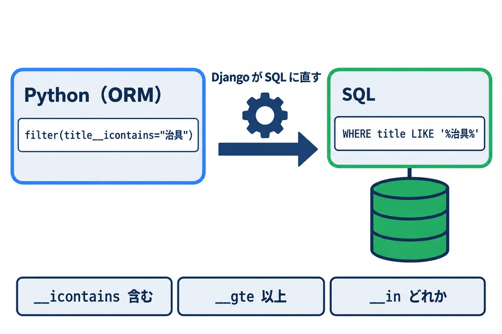
何に使う: データベースの表から、条件に合う行を取り出す・数える・書きかえる時。Django では、SQL を直接書かずに、Python のメソッドで書きます（05 の 6 章）。
▶ 書く所と動かし方: PowerShell で cd webapp_learning\samples\05_django し、05 の 2 章と 4 章の準備（仮想環境と migrate）をしてあれば、次を打ちます。練習用のデータを毎回作り直すので、何度動かしても同じ結果になります。
.\.venv\Scripts\python.exe manage.py shell -c "import orm_cheatsheet"
samples\05_django\orm_cheatsheet.py:
"""付録 B-16: Django ORM でよく使う書き方の早見表。
使い方: .venv\\Scripts\\python.exe manage.py shell -c "import orm_cheatsheet"
（練習用のデータを作り直すので、何度動かしても同じ結果になる）"""
from datetime import date
from django.contrib.auth import get_user_model
from django.db import transaction
from django.db.models import Count, F, Max, Min, Q
from requests_app.models import Approval, Request
User = get_user_model()
S = Request.Status
# 0. 練習用のデータを作り直す
Request.objects.all().delete()
User.objects.filter(username__in=["012345", "012346", "012347"]).delete()
yamada = User.objects.create_user("012345", password="practice-only-1", first_name="太郎", last_name="山田")
sato = User.objects.create_user("012346", password="practice-only-2", first_name="花子", last_name="佐藤")
suzuki = User.objects.create_user("012347", password="practice-only-3", first_name="一郎", last_name="鈴木")
# bulk_create: まとめて作る（1 回の SQL で入る）
Request.objects.bulk_create([
Request(title="治具の製作", due_date=date(2026, 11, 10), requester=yamada),
Request(title="部品の追加工", due_date=date(2026, 10, 31), requester=yamada, status=S.APPROVED),
Request(title="棚の取り付け", due_date=date(2026, 11, 20), requester=sato, status=S.RETURNED),
Request(title="工具の修理", due_date=date(2026, 12, 5), requester=suzuki),
Request(title="治具の改造", due_date=date(2026, 11, 15), requester=sato),
])
jig = Request.objects.get(title="治具の製作")
Approval.objects.create(request=jig, order=1, approver=sato)
Approval.objects.create(request=jig, order=2, approver=suzuki)
def titles(qs):
return [r.title for r in qs]
# 1. 数える・あるか・最初と最後
print("1. count:", Request.objects.count(), "/ exists:", Request.objects.filter(status=S.DONE).exists())
print(" first（納期の近い順）:", Request.objects.order_by("due_date").first().title)
# 2. 絞り込みの書き方（項目名__条件）
R = Request.objects # 長いので、短い名前を付けておく
print("2. 件名に「治具」を含む:", titles(R.filter(title__icontains="治具").order_by("id")))
print(" 状態がどれか:", titles(R.filter(status__in=[S.APPROVED, S.RETURNED]).order_by("id")))
nov = R.filter(due_date__year=2026, due_date__month=11).order_by("due_date")
print(" 11 月が納期:", titles(nov))
print(" 納期が 11/15 以降:", titles(R.filter(due_date__gte=date(2026, 11, 15)).order_by("due_date")))
print(" 回覧中でない:", titles(R.exclude(status=S.CIRCULATING).order_by("id")))
# 3. Q で「または」・「ではない」を組み立てる
q = Q(requester=sato) | Q(due_date__lt=date(2026, 11, 1))
print("3. 佐藤さんの依頼、または 11 月より前:", titles(R.filter(q).order_by("id")))
not_yamada = R.filter(~Q(requester=yamada), status=S.CIRCULATING).order_by("id")
print(" 山田さん以外で回覧中:", titles(not_yamada))
# 4. つながった先の項目で絞る（__ でたどる）
print("4. 鈴木さんが承認者に入っている:", titles(R.filter(approvals__approver=suzuki)))
print(" 依頼者の名字が「佐藤」:", titles(R.filter(requester__last_name="佐藤").order_by("id")))
# 5. 並べる・ページに分ける（[ ] で LIMIT と OFFSET）
ordered = R.order_by("-due_date", "id")
print("5. 納期の遠い順の 1〜2 件目:", titles(ordered[:2]), "/ 3〜4 件目:", titles(ordered[2:4]))
# 6. 値だけを取り出す: values（辞書）・values_list（タプル。flat=True で 1 つの値）
print("6. values:", list(R.filter(requester=yamada).order_by("id").values("title", "status")))
print(" values_list:", list(R.order_by("id").values_list("title", flat=True)))
# distinct の前の order_by() は、Meta の並び順（作った日時）を外すため。外さないと重なりが消えない
names = R.order_by().values_list("requester__last_name", flat=True).distinct()
print(" distinct（重ならない依頼者）:", sorted(names))
# 7. 集計: aggregate（全体で 1 つ）・annotate（1 行ごと）
print("7. 納期の最小・最大:", R.aggregate(first=Min("due_date"), last=Max("due_date")))
users = User.objects.filter(username__in=["012345", "012346", "012347"])
per_user = users.annotate(n=Count("requests")).order_by("username")
print(" 依頼者ごとの件数:", [(u.last_name, u.n) for u in per_user])
with_approvers = R.annotate(n=Count("approvals")).filter(n__gt=0)
print(" 承認者の人数:", [(r.title, r.n) for r in with_approvers])
# 8. まとめて変える・消す（数が返る）
late = R.filter(status=S.CIRCULATING, due_date__gte=date(2026, 12, 1))
changed = late.update(status=S.IN_PROGRESS)
print("8. update で変えた件数:", changed, "/", R.get(title="工具の修理").get_status_display())
# 9. F: ほかの項目の値を使う（ここでは、承認の順番を 1 つずつ後ろへずらす）
Approval.objects.filter(request=jig).update(order=F("order") + 10)
orders = Approval.objects.filter(request=jig).order_by("order").values_list("order", flat=True)
print("9. F で順番をずらした:", list(orders))
# 10. get_or_create: あれば取り出し、無ければ作る（created で、どちらだったか分かる）
obj, created = R.get_or_create(
title="治具の製作", defaults={"due_date": date(2026, 1, 1), "requester": yamada}
)
print("10. get_or_create:", obj.title, "作った？", created)
# 11. transaction.atomic: 途中で失敗したら、全部なかったことにする
try:
with transaction.atomic():
Request.objects.filter(title="治具の改造").update(status=S.DONE)
raise RuntimeError("わざと失敗")
except RuntimeError:
pass
print("11. 失敗したので元のまま:", Request.objects.get(title="治具の改造").get_status_display())
# 12. 消す（delete は、消した件数と、種類ごとの件数を返す。回覧も一緒に消える）
print("12. delete:", Request.objects.filter(title="治具の製作").delete())
▼ 実行結果
8 objects imported automatically (use -v 2 for details).
1. count: 5 / exists: False
first（納期の近い順）: 部品の追加工
2. 件名に「治具」を含む: ['治具の製作', '治具の改造']
状態がどれか: ['部品の追加工', '棚の取り付け']
11 月が納期: ['治具の製作', '治具の改造', '棚の取り付け']
納期が 11/15 以降: ['治具の改造', '棚の取り付け', '工具の修理']
回覧中でない: ['部品の追加工', '棚の取り付け']
3. 佐藤さんの依頼、または 11 月より前: ['部品の追加工', '棚の取り付け', '治具の改造']
山田さん以外で回覧中: ['工具の修理', '治具の改造']
4. 鈴木さんが承認者に入っている: ['治具の製作']
依頼者の名字が「佐藤」: ['棚の取り付け', '治具の改造']
5. 納期の遠い順の 1〜2 件目: ['工具の修理', '棚の取り付け'] / 3〜4 件目: ['治具の改造', '治具の製作']
6. values: [{'title': '治具の製作', 'status': 'circulating'}, {'title': '部品の追加工', 'status': 'approved'}]
values_list: ['治具の製作', '部品の追加工', '棚の取り付け', '工具の修理', '治具の改造']
distinct（重ならない依頼者）: ['佐藤', '山田', '鈴木']
7. 納期の最小・最大: {'first': datetime.date(2026, 10, 31), 'last': datetime.date(2026, 12, 5)}
依頼者ごとの件数: [('山田', 2), ('佐藤', 2), ('鈴木', 1)]
承認者の人数: [('治具の製作', 2)]
8. update で変えた件数: 1 / 対応中
9. F で順番をずらした: [11, 12]
10. get_or_create: 治具の製作 作った？ False
11. 失敗したので元のまま: 回覧中
12. delete: (3, {'requests_app.Approval': 2, 'requests_app.Request': 1})
▶ ここで初めて出てくるコード
.bulk_create()（Django）: いくつもの行を、1 回の SQL でまとめて作るメソッド。.values_list()（Django）: 問い合わせの結果を、タプル（値の組）の並びで返すメソッド。flat=Trueを付けると、1 つの列の値だけの並びになります。.aggregate()（Django）: 問い合わせの全体を、1 つの値（最小・最大・合計など）にまとめるメソッド。aggregate(last=Max("due_date"))。.get_or_create()（Django）: 条件に合う行があれば取り出し、無ければ作るメソッド。(物, 作ったか)の組が返ります。F（Django）: Django のF("amount")は、ORM の中で「その行の、その列の値」を表します。update(round=F("round") + 1)は、データベースの中で 1 足すので、同時に 2 人が直してもずれません。Max（Django）: Django のMax("amount")は、ORM の集計で、いちばん大きい値を求めます。Min（Django）: Django のMin("amount")は、いちばん小さい値を求めます。
ここがポイント:
| やりたいこと | 書き方 | SQL では |
|---|---|---|
| 条件で絞る | filter(status="approved") |
WHERE status = 'approved' |
| 含む（大文字小文字を区別しない） | filter(title__icontains="治具") |
WHERE title LIKE '%治具%' |
| どれか | filter(status__in=[...]) |
WHERE status IN (...) |
| 以上・より小さい | filter(due_date__gte=d)・__lt |
>=・< |
| 年・月で | filter(due_date__year=2026, due_date__month=11) |
|
| ではない | exclude(...)・filter(~Q(...)) |
NOT |
| または | filter(Q(a) | Q(b)) |
OR |
| つながった表の項目 | filter(requester__last_name="佐藤") |
JOIN |
| 並べる | order_by("-due_date", "id")（- は大きい順） |
ORDER BY |
| 何件目から何件 | [2:4] |
LIMIT 2 OFFSET 2 |
| 数・あるか・最初 | count()・exists()・first() |
COUNT・EXISTS・LIMIT 1 |
| 列だけ | values(...)・values_list(..., flat=True) |
SELECT 列 |
| 全体の集計 | aggregate(Min(...), Max(...)) |
MIN・MAX |
| 1 行ごとの集計 | annotate(n=Count("requests")) |
GROUP BY |
| まとめて変える・消す | update(...)・delete() |
UPDATE・DELETE |
| 列の値を使う | F("order") + 10 |
"order" + 10 |
| あれば取り出し、無ければ作る | get_or_create(...) |
|
| 全部成功か、全部取り消し | with transaction.atomic(): |
BEGIN・COMMIT・ROLLBACK |
8 objects imported automatically は、Django 5.2 の shell が「モデルなどを 8 つ、自動で使えるようにしました」と知らせる文です。distinct() の落とし穴: モデルの Meta に ordering（並び順）があると、distinct() を付けても重なりが消えません（並び順の列も一緒に比べるため）。order_by() を空で呼んで、並び順を外してから distinct() します。update() と delete() は、件数を返します。 「何件変わったか」を確かめると、条件のまちがいに気付けます。transaction.atomic() の中で失敗すると、中でした変更は全部取り消されます（11 の「元のまま」）。依頼の状態と回覧の記録のように、両方そろって初めて正しい変更は、これで囲みます（06 前編）。get() は 1 件だけを取り出します。 無い時は DoesNotExist、2 件以上ある時は MultipleObjectsReturned になります。無いかもしれない時は filter(...).first() を使います（None が返る）。| 症状（出る文） | よくある原因 | 直し方 |
|---|---|---|
npm : このシステムではスクリプトの実行が無効になっているため… |
PowerShell の実行ポリシー | npm.cmd・npx.cmd と打つ（00 の 6.3） |
Cannot find module ／ 部品が無いと言われる |
npm install をしていない・別のフォルダで打った |
package.json があるフォルダで npm install |
node src\x.ts で型のまちがいがあるのに動いてしまう |
Node.js は型を確かめない | npx tsc で確かめる（02 の 6 章） |
| 画面が真っ白（React） | 実行中のエラー | ブラウザで F12 → Console のエラーを読む |
Each child in a list should have a unique "key" prop. |
map で並べたタグに key が無い |
変わらない番号（id）を key に渡す（B-09） |
| 入力欄に文字が打てない（React） | value だけあって onChange が無い |
onChange で state を変える（B-10） |
| state を変えたのに画面が変わらない | push・直接の書きかえで、同じ配列・オブジェクトのまま |
[...a, x]・{ ...o, k: v } で新しい物を作って set（B-04・B-05） |
| 何度も fetch が飛ぶ | useEffect の [ ] を書き忘れた |
見張る値を [ ] に書く（B-11） |
Unexpected token '<', "<!doctype "... is not valid JSON |
URL のまちがい（HTML が返ってきた） | URL を確かめる（B-11） |
IndentationError ／ expected an indented block |
Python の字下げが崩れた（PDF からのコピーなど） | 字下げを 4 文字ずつそろえる。原稿の .md や samples からコピー |
ModuleNotFoundError: No module named '...' |
仮想環境に部品が無い・別の Python で動かした | .\.venv\Scripts\python.exe -m pip install -r requirements.txt |
UnicodeDecodeError ／ 文字化け |
encoding を付けずに開いた・Shift_JIS のファイル |
encoding="utf-8"。Excel の CSV は "cp932" か "utf-8-sig"（04 の 5 章） |
KeyError: 'mail' |
辞書に無いキーを [ ] で引いた |
d.get("mail", 既定値)（B-14） |
no such table: requests_app_request |
migrate をしていない |
manage.py migrate（A-4） |
| モデルを変えたのに表が変わらない | makemigrations を忘れた |
makemigrations → migrate |
DoesNotExist |
get() で無い物を取り出した |
filter(...).first() か、try で受け止める（B-18） |
distinct() で重なりが消えない |
Meta.ordering の列も比べている |
order_by().values(...).distinct()（B-18） |
| 日付が 1 日・9 時間ずれる | 時間帯（tzinfo・timeZone）を付けていない |
B-07・B-17 |